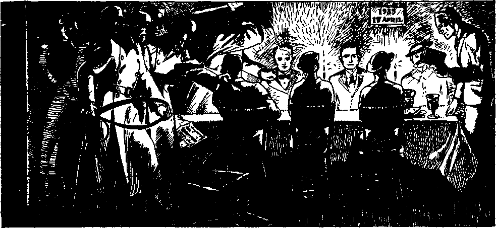

iiiiiiiiiiiiiiiiiiiiiiiiiiiiiiiiiiiiiiiiiiiiiiiiiiiiiiiiiiiiiiiiiiiiiiiiiiiinii
in this issue
SEPARATING
THE NATIONS
Complete text of address by Judge Rutherford delivered at Shrine Auditorium, Los Angeles, California, and broadcast over world wide radio network February 23, 1936
iiiimmiiiiiiiiiiiiMimiiiiiiiiiiiiiiiiiiiiiiiiiitiiiiiiiiiiiiiiiiiiiiiiiii
every other
WEDNESDAY
five cents a copy
one dollar a year
Canada & Foreign 1.25
Vol. XVII-No. 430
March 11,1936
Comprehensive Report of Unique World-wide Convention
‘ ‘ Riches ’ ’—A Sure Guide to Everlasting Life on Earth
The Irvington Inquisition
Jehovah’s witnesses in Germany Commemorating the Lord’s
Jehovah’s witnesses in Hamburg 379
Jehovah’s witnesses at Leverkusen 379
The Ratti-Hitler Beast in Action 380
At the High Court in Duesseldorf 380
Radiograms, Cablegrams, Telegrams
POLITICAL—DOMESTIC AND FOREIGN
Green-Shirt Business in Brazil
Misuse of Words in El Salvador
Jesuitism in the Land of Liberty
Jesuits Determined to Have Fascism 374
The Tool of the Jesuits
in Northern Rhodesia 375
W. J. Fitzgerald, Attorney General 375
Revealing What Was Covered Up 378
RELIGION AND PHILOSOPHY
Liberty of Worship in Costa Rica 372
..oXg).--------—--—-------------------------------------------------------.(sXs..
Published every other Wednesday by
GOLDEN AGE PUBLISHING COMPANY, INC.
117 Adams Street, Brooklyn, N. Y., U. S. A.
Clayton J. Woodworth President Nathan H. Knorr Vice President
Charles E. Wagner Secretary and Treasurer
FIVE CENTS A COPY
$1 a year, United States; $1.25 to Canada and all other countries.
Notice to Subscribers
Remittances : For your own safety, remit by postal or express money order. When coin or currency is lost in the ordinary mails, there is no redress. Remittances from countries other than those named below' may be made to the Brooklyn office, but only by international postal money order.
Receipt of a new or renewal subscription will be acknowledged only when requested. Notice of expiration is sent with the journal one month before subscription expires. Please renew promptly to avoid loss of copies.
Send change of address direct to us rather than to the post office. Your request should reach us at least two weeks before the date of issue with which it is to take effect. Send your old as well as the new address. Copies will not be forwarded by the post office to your new address unless exttq postage is provided by you.
Published also In Bohemian, Danish, Dutch, Finnish, French, German, Greek, Japanese, Norwegian, Polish, Spanish, Swedish.
Offices for Other Countries
British 34 Craven Terrace, London, W. 2, England
Canadian 40 Irwin Avenue, Toronto 5. Ontario, Canada
Australasian 7 Beresford Road, Strathfleld, N. S. W., Australia
South African Boston House, Cape Town, South Africa
Entered as second-class matter at Brooklyn, N. Y.» under the Act of March 3, 1879. -----
Volume XVII Brooklyn, N.Y., Wednesday, March 11, 1936 Number 430
Judge Rutherford’s world-wide hookup from Shrine Auditorium, Los Angeles, Calif., February 23, 1936
MORE than nineteen centuries ago there was on the earth the only great man that ever lived, and whose name is Jesus. Changed from spirit to human by the power of Almighty God, He was sent to the earth to tell the truth in vindication of Jehovah God’s name. He spoke with absolute authority, because His speech was ordered by Jehovah. His words are recorded in the Bible and disclose God’s purpose.
Today I speak to this audience from God’s Word and utter not the wisdom of man. To those who believe on God and Christ Jesus and that the Bible is the truth, and who desire to know and to do the will of God, this speech is addressed. The Bible, together with the well-known facts, will convince you that my speech is true. A controversy I do not seek, but the truth of God’s Word always provokes His enemies to wrath.
SINGULAR COINCIDENCES
Thoughtful persons will think It singular that on February 23, 1936, Judge Rutherford lectured to the whole world, by direct wire and by wireless to great audiences In many of the most Important cities on the planet, and the Associated Press and other great publicity agencies were' silent. The lecture on "SEPARATING THE NATIONS”, reproduced herewith, speaks for Itself.
They will think It singular that on the night of that same day the president of the United States was freely granted the facilities of the National Broadcasting Company for a nation-wide broadcast urging an alliance of all faiths, Jews, Roman Catholics, Protestants, Holy Rollers, Mormons, and what not.
Think about this a little. Judge Rutherford and his friends are denied the facilities of the National Broadcasting Company, even though they pay well for them, to broadcast such a message as Is contained In this Issue, the most Important message that can come to man.
Further, the Roman Hierarchy Is now endeavoring to counterfeit Judge Rutherford's thundering truths, it Is now claiming that Christ has returned, and Is now reigning at Vatican City In the person of the pope; that great efforts are now to be Immediately made to get all the ‘prodigal sons’ (Jews, Protestants, Spiritists, Christian Scientists, et al.) into the fold; those that come In will-| Ingly will be welcomed; those that do not | come In willingly will be forced In.
| According to the plain and unchanging a teaching of the Roman Catholic church, when | the Roman Hierarchy gets sufficient power I it will murder everybody who protests against | Its unholy, lying, diabolical teachings, as : Judge Rutherford does In the address now f before you.
Jehovah’s chief enemy is Satan the Devil, who for centuries has attempted to turn all men away from God and into destruction. It is the expressed will of God that the people now hear the truth, that they may intelligently choose their own destiny. (Isaiah 43: 9,10) My obligation is to tell this message, and then it is your obligation to choose. When a great storm is threatened the government warns the people. When a crisis is due on the world God gives warning to the people, that those of good will toward Him may flee to the place of safety. God used Noah to give warning of the approaching flood. (2 Peter 2: 5) He used Jesus and other prophets to sound the warning of the impending doom of Jerusalem, and now Jehovah uses a company of witnesses to give warning of the final tribulation, which is here and which is preceded by the separation of the nations. That separation is now in progress, as you will see from the evidence produced here today.
That you may properly appreciate the extraordinary conditions prevailing today, it is necessary to recount some of the most important events of the past. Know this, that Jehovah is the true and supreme God. (Psalm 83:18) Christ Jesus His Son is the Savior of man, the rightful Ruler of the world, and the Vindicator of Jehovah’s name. (John 10:36; Revelation 1:5; 17:14) For centuries Satan, by permission of
Jehovah, has been the invisible ruler of the world, and that uninterrupted rule is now come to an end. In ruling the world Satan has always employed three factors among men, to wit, religionists, commercial traffickers, and politicians, and by these he has kept the people under control. Jesus was never a religionist, but always obeyed Jehovah God. When the man Jesus be-
gan to proclaim the truth Satan endeavored to trap Him and to cause His destruction. Jesus steadfastly resisted and said to the Devil (Matthew 4:10): “It is written, Thou shalt worship the Lord thy God, and him only shalt thou serve.”
Then Satan employed all the factors of selfish men to contradict, annoy and persecute Jesus, and the leaders in that persecution were religionists. (Luke 23:10, 23; John 19: 6,15, 21) What came to pass on Jesus then has befallen every person who since then has faithfully followed in His steps, even as Jesus foretold. (John 15:19-21) The persecutors of Jesus falsely claimed to be the servants of God. Jesus told them that they were hypocrites, liars, and the children of Satan. (John 8:13,42-44) That truthful speech of Jesus greatly angered the religionists, and they immediately sought the aid of the commercial traffickers and the politicians and the mob, to bring about the death of Jesus. They falsely charged Jesus with the crimes of sedition and treason against the state, produced false witnesses, held a mock court trial, during which the religionists demanded the lifeblood of Jesus, and the political rulers sent that righteous One to an ignominious death to gratify the bloodthirsty religionists. (Luke 23:1-25) All who were against Jesus were on the Devil’s side.
Just before His death Jesus uttered certain prophecies to His disciples, which prophecies are sure of fulfillment. He told them that He would be put to death because He told the truth; that God would resurrect Him; that He must go away and receive His kingdom, and that in due time He would come again and rule the world. Since then every true follower of Christ Jesus has looked forward to the coming of Christ and His kingdom. Keenly desiring to know when that time would come His disciples asked Jesus what would be the proof of His coming and the end of Satan’s uninterrupted rule. (Matthew 24: 3) The answer of Jesus was true, and when we see that the things have now come to pass, which He declared would be proof of His coming, we are certain that His prophecies are fulfilled.
Jesus answered that the first evidence that He had taken His power would be the anger of the nations, expressed in the World War, and that would be followed quickly by famine and pestilence. (Revelation 11:17,18; Matthew 24:7,8) The facts known to all show that the prophecy began to have fulfillment in 1914. Other proof Jesus said would be that the nations would be in distress and perplexity and men’s hearts failing them for fear. (Luke 21:25) That condition has prevailed particularly since the close of the World War. He also said that the Devil would bring great sorrow upon the people to turn them away from God. (Revelation 12:12) That prophecy is fulfilled before your eyes. Never has there been such woe on earth as now. The true followers of Christ Jesus are therefore not looking for the coming of the Lord and the end of the world, because such is an accomplished fact. The world has ended and Christ Jesus has come. Soon He will destroy Satan and all the "wicked ones, and He commands that the people now be so informed, that they may seek safety before the greatest of all tribulations falls upon the world.—Matthew 24:14-22.
Jehovah God is that Great Spirit, whom no human eyes can see. Jesus Christ is the “express image” of God, and no human eyes will ever see Him; but all shall discern His presence and His power by reason of what they shall observe and experience. (1 Timothy 6:16; Hebrews 1:3; John 14:19) The Lord Jesus has now come in the spirit and is exercising His power and authority toward things of the earth. As we proceed, evidence will be produced disclosing His presence and the work He is doing; that the nations are being separated, and the reason; the influences exercised in that work, and who are involved; what will he the result, and where is the only place of safety.
Christ Jesus declared that the nations would be separated into two distinct companies, one of which is for Him, and the other of which is against Him and His kingdom. With full authority Jesus uttered the words of Matthew 25, to wit: “When the Son of man shall come in his glory, and all the holy angels with him, then shall he sit upon the throne of his glory; and before him shall be gathered all nations; and he shall separate them one from another, as a shepherd divideth his sheep from the goats.” The irresistible power of Christ Jesus is now separating the nations, and the separating work must be done, because it is God’s appointed time to deliver the obedient and to destroy the disobedient. The peoples of the earth must and will
Separating the Nations
different languages. The fact that Christ Jesus declares that He will separate the nations is conclusive proof that the separating work must he done and will he done before the day of Armageddon. In that separating work religionists, commercial traffickers, and politicians have a prominent part, and all the people are involved. The people of good will toward God are the ones who love righteousness and hate iniquity, and seeing and appreciating that separating work in progress they will quickly put themselves on the side of the Lord, which is the only place of safety.
It is the express will of God that the people now hear the truth of and concerning the separating of the nations; and in obedience to His commandment, and for no other reason, that proof is submitted. For centuries the whole
take either one side or the other. God affords the opportunity for the people to make an intelligent choice by causing the truth to be delivered in their presence and hearing. For this reason Jehovah’s witnesses are sent to the people and commanded by the Lord to tell the people that Jehovah is God, that Christ is King, and that now the day of reckoning is here. (Matthew 24:14; Ezekiel 9:4) If Jehovah’s witnesses fail or refuse to proclaim this message of the Kingdom to the nations, those witnesses are certain to suffer complete destruction. (Acts 3: 23) In obedience to God’s commandment His witnesses have published the message of the Kingdom in book form and distributed to the people more than 200 million copies thereof in many world has been under the dominating power of Satan. Born in sin and shapen in iniquity men have been enabled to escape the power of Satan only by believing on and serving God and Christ. (1 John 5:19; Romans 5:12) Many persons have thought themselves to be on the side of the Lord, but, having been deceived by false doctrines, they will now find themselves still on the side of Satan. Religionists claim to be on the side of the Lord, but they are not. Men of many organizations claim to be Christians, but they are not. By their teachings and their course of action men are now making known where they stand.
Religion and Christianity are two separate and distinct things. Religion is the observance and practice of any outward forms and ceremonies by which persons attribute protection and salvation to some power, object or thing. Christianity is a statement of truths which proceed from Jehovah God, and which truths are employed and followed without regard to formal ceremonies and are obeyed in the true worship of Almighty God. True Christians attribute protection and salvation to God alone, administered by Him through Jesus Christ. There are many religions. There is but one true Christianity. Men worship God in spirit and in truth only by serving Him as He commands.—John 4:24; Matthew 6:18.
As Jesus was not a religionist, even so none of His true followers are religionists, but are the true worshipers of Almighty God. Religionists compel others to obey the commandments of men and inflict bodily punishment on those who refuse to conform to their religion. Contrary thereto, God sets before men the truth and affords them the opportunity to intelligently obey and live or to refuse to obey and remain on Satan’s side. Many religionists claim to represent God and Christ, and to them Jesus says (Matthew 7:21-23): “Not every one that saith unto me, Lord, Lord, shall enter into the kingdom of heaven; but he that doeth the will of my Father which is in heaven. Many will say to me in that day, Lord, Lord, have we not prophesied in thy name? and in thy name have cast out devils ? and in thy name done many wonderful works? And then will I profess unto them, I never knew you: depart from me, ye that work iniquity.”
Since the building of the tower of Babel till now Satan has employed religionists to set up images and to cause the people to bow before such and to confess allegiance to what such images represent, and thus Satan has done and does to turn the people from God. (Daniel 3:1-6) For their own good God commanded His people that they shall have no god besides Him, nor shall they make any image, symbol or thing, and bow before it, and that they shall not attribute protection and salvation to that image or what the image represents. (Exodus 20:2-5) Now the day has come when the people must intelligently choose to serve God as commanded or to serve images put forth by the Devil and his organization. It is the time of judgment, and the Lord is conducting that judgment. This is the time of crisis, which involves all men. It is the time of great peril. In order that intelligent people may understand that this is a time of peril the Lord makes known what conditions will prevail at this time. It is therefore written, at 2 Timothy 3:1-5: ‘Know this, that in the last days [of Satan’s world] perilous times shall come; for then men shall be extremely selfish, boasters, proud, contract-breakers, false accusers, despisers of those that are good; lovers of pleasure more than lovers of God; having a form of godliness, but denying the power thereof.’ Such persons attribute power and salvation to things, and not to Almighty God. The condition described by this scripture is exactly what exists in every nation on earth today. The Lord caused these things to be recorded in the Bible to aid us to see that the time of separation of the nations is here.
America was established as a place of freedom for the worship of Almighty God, but now after many centuries of such freedom the Devil employs religionists to introduce the practice of the formal ceremony of flag-saluting, thereby attributing salvation to a thing or power made by men. Such is a form of godliness, but denies the power of Jehovah God, who alone can save.
As further evidence of the presence of Christ and His work of separating the nations, note that He said (Matthew 24: 37-39): “But as the days of No'e were, so shall also the coming of the Son of man be. For as in the days that were before the flood, they were eating and drinking, marrying and giving in marriage, until the day that No'e entered into the ark, and knew not, until the flood came, and took them all away; so shall also the coming of the Son of man be.”
True to this prophecy, practically all organizations of men have gone pleasure-mad, and a Jesuit religionist is assigned to arbitrarily determine what motion pictures shall be used for the amusement and pleasure of the people, and, when opportunity is afforded, a religious organization is exalted and the name of God defamed by such pleasure pictures. As the prophecy foretold, the peoples eat and drink, and in all manner indulge their selfish appetites, and at the same time they ridicule the name and word of God. Religious organizations are not for Jehovah God and His kingdom, but they join hands with commercial traffickers and with the political rulers to oppose those who tell the truth of and concerning God’s kingdom; and concerning such opposers Jesus says (Matthew 12:30): “He that is not with [for] me is against me.” In Noah’s day the people were warned of the approaching flood, but they acted in defiance of God and His warning. Like conditions exist today, and all the nations act in defiance of God's law. Some of the nations, such as Russia and Germany, openly defy God, and in all the nations the witnesses of Jehovah are hated for His name’s sake. (Matthew 24:9) In all of these nations, however, there are those people who have a good will and honest heart toward God and His kingdom, and such people of good will were pictured by Noah and the members of his family, who remained true to Jehovah God.
The Bible was written expressly, as therein stated, to instruct and guide men in the right way, that they might receive God’s approval. (2 Timothy 3:16,17) There is no other sure guide. (Psalm 119:105) The nations of “Christendom” have had full access to the Bible and are in an implied agreement to be guided by it; but religionists have so misrepresented the Bible that the masses of the people have turned away from and contemptuously ignore it. It was exactly that way before the flood, and also just before the destruction of Jerusalem. Israel was the only nation on earth with which God made a covenant. (Amos 3:2) The priestly class was commanded by the Lord to instruct the people in His Word and to lead them in His true worship. (Malachi 2:7) Those teachers abandoned God’s Word, became religionists, and substituted their own religious ceremonies in the place of the true worship of God, and such men are known as Pharisees. The Lord Jesus denounced them as hypocrites and instruments of the Devil. The most scathing denunciation ever leveled against men is that by Jesus spoken against those Pharisees, as set forth in the twenty-third chapter of Matthew. Jesus told them that they were the representatives of the Devil, although they claimed to represent God. (John 8:13,44) His words of truth angered those religionists, and for that reason they cruelly persecuted Jesus and brought about His death. If the man Jesus were on earth today and uttered the same words of truth against hypocritical religionists they and their allies would charge Him with the crimes of sedition and treason. Everyone knows that today it is the religionists who lead in the denunciation and persecution of the men and women who have devoted themselves to proclaiming the truth of and concerning the kingdom of God. Such religionists are being made manifest, and the Lord is separating them from others and putting them on His left-hand side.
Jehovah by His prophet foretold that there would arise a religious organization which would grow and prosper and that in these last days it would have and exercise great influence, rule and power with the commercial traffickers and political rulers, and would dominate and oppress the people and would continue to do so while the Lord’s work of separating the nations progresses. The Scriptures state that such religionists would claim to serve God but in truth and in fact are the servants of God’s enemy Satan ; that they would be arrogant, boastful, oppressive and scornful, and that in the end such religious organization would suffer destruction at the hand of the Lord, and that the people must be told these facts. Concerning that religious organization, Jehovah uses, at Isaiah 28, these words: ‘Wherefore hear the word of the Lord, ye scornful men, that rule this people which is in Jerusalem; Because ye have said, We have made a covenant with [or authoritative declaration concerning] death, and with hell have effected a vision, the scourge will not reach us, for we have made lying our refuge, and in falsehood we have hid ourselves, ... ye shall be trodden down.’ {Rotherham) This authoritative prophecy of Jehovah must have fulfillment, and I submit the indisputable evidence that you may see that it is now fulfilled.
A lie is a statement which purports to be true but which is false, the telling of which works injury to others. Your attention is called to some of the doctrines taught by religionists, and which you will see exactly fit and fulfill this prophecy. The Scriptures declare that all lies proceed from the Devil and that those who indulge in telling lies are the offspring of the Devil. Jehovah said to Adam: ‘In the day you sin you shall surely die.’ (Genesis 2:17) “The wages of sin is death.” (Romans 6:23) Immediately thereafter Satan told Eve and Adam (Genesis 3:1-5): We shall not surely die, but if you disobey God you will become as wise as He is.’ That statement of Satan was the first great lie and the breeder of all other lies, and resulted in the death of Adam and the suffering and death of men from that day till now.
There is a great religious organization that for centuries has based practically all its teaching upon the first great lie of Satan just stated, as you will see. That religious organization teaches that every man has an immortal soul and that therefore there is no death; that when one is supposed to die his soul goes immediately to “purgatory”, and later may go to heaven or hell. This is taught by that organization in the face of God's Word, which says (Genesis 2:7; Ezekiel 18:4): 'Man is a soul,’ and every breathing creature is a soul, and “the soul that sinneth, it shall die”.
That religious organization teaches the false doctrine that millions of people are now in “purgatory” undergoing painful suffering and that preachers of that religious organization can, by their prayers, shorten the period of suffering in “purgatory”. That doctrine has worked great injury to millions, causing them to give to clergymen their hard-earned money in an effort to get their loved ones out of “purgatory”, when in fact, as the Bible shows, no one is in “purgatory”. That same religious organization teaches that Christ Jesus built His church upon the apostle Peter and that since then other men have, at regular periods, succeeded Peter in office; whereas the Scriptures plainly teach that God through Jesus built the church upon Christ, the true foundation Stone, and that Peter has no successor. (Matthew 16:18; 1 Peter 2:3-8; Ephesians 2:20-22) That same religious organization tells the people that the one man, who is the head of said organization, has sole authority to interpret or tell the meaning of the Scriptures; whereas the Bible says that no scripture is of private interpretation. (2 Peter 1: 20, 21) That same religious organization claims to represent Christ on earth, and at the same time participates in the politics of every nation on earth, and does so in the face of Jesus’ plain declaration: “My kingdom is not of this world.” (John 18: 36; James 4:4) These scriptures and the facts show that the religious organization mentioned does not have the approval of God and Christ. You must decide whom you will believe, whether selfish men or the ’Lord Jesus Christ.
Some history is here very important to consider. That same religious organization, that teaches Satan’s lies I have just mentioned, long ago instituted and carried on in Europe and on the American continent a cruel and wicked inquisition, the purpose of which was to compel the people to be submissive to the arrogant men controlling that religious organization. The independent men and women who tried to serve God and Christ Jesus as the Bible teaches were by that court of inquisition charged with heresy, and all manner of torture was applied to compel them to confess their “heresy” and to be submissive to the religious organization. Some of the means of torture employed by the Inquisition were these: The victim’s feet were seared with red-hot irons; he was required to put on an iron boot, which was poured full of hot lead; the victim was placed in a machine which pulled his joints apart, or was put in a machine with knives that cut his flesh into shreds. Says the Encyclopedia Britannica: Two features of the Inquisition were prominent, to wit: The suppression of freedom of speech, and the destruction of books that attempted to explain the Bible. All books were censored by the bishops, and anything explaining the Bible was suppressed in order to keep the people in ignorance of God and His Word. Any lawyer who dared appear in defense of one charged with heresy was also held guilty of heresy, and therefore the oppressed were left without counsel, aid or defense. The recorded evidence of the Inquisition proves beyond all doubt that the religious organization mentioned was ever against God and His kingdom and on the side of the Devil.
Because of the oppression inflicted by religionists our forefathers fled to the wild shores of America and out of primitive forests cut a nation that would afford them refuge from oppression. Those honest men saw to it that the fundamental law of the Colonies contained this provision: We hold these truths, that all men have a natural and indefeasible right to worship Almighty God according to the dictates of their own conscience.’ Such is the fundamental law of all the states and the nation. Now, after a period of more than 150 years, that same religious organization I have mentioned as teaching false doctrines, again, in this land of freedom, revives wicked persecutions of true worshipers of God. In many countries of Europe the people are denied the right to study the Bible and worship God. In Germany thousands of men now languish in filthy prisons because they have insisted on their right to come together and study the Bible and worship Almighty God. All manner of cruel torture is inflicted upon those persons.
Men and women are forcibly sterilized to satisfy the beastly desires of those religionists. Many of them are beaten into insensibility because they decline to yield to the demand of the religionists who attribute salvation to a man and not to God. Because the people possess the Bible and books explaining the Bible they are thrown into prison and tortured, and the Bible and their books are burned. The cruel Inquisition has been revived. In Quebec, South Africa, New Jersey and other places, at the instance of the same religionists, men and women are charged with sedition because they attempt to place in the hands of the people books explaining the Bible. In some of the states laws have recently been enacted, at the instance of these same religious organizations, making it a crime punishable by long term in prison to possess and use a phonograph record, or to make a speech, or to rent a hall for that purpose, or to use the radio or any other means, for telling the truth of God’s Word, which truth might expose to view the crookedness of that religious organization.
Jehovah’s witnesses are not a cult or sect. They are the true followers of Christ Jesus and worshipers of Almighty God by serving Him in obedience to His commandment. Having agreed to do God’s will, they are diligent at all times to obey His law. The purpose of Jehovah in having witnesses on the earth at this time is not to convert the world, but the purpose is to bear testimony to the people, informing them of God’s purpose and warning them against present dangers. God’s kingdom is the only hope of salvation for mankind, and, the kingdom now having come, the Lord sends His witnesses forth amongst the people to tell them the truth, commanding them in these words (Matthew 24:14): “This gospel of the kingdom shall be preached in all the world for a witness unto all nations; and then shall the end come.” These witnesses must obey this commandment or, otherwise, lose everything at God’s hand. While the Lord Jesus proceeds with the separation of the nations these witnesses must tell the people about it as commanded. Because they tell the truth as commanded, they are now, as Jesus foretold (Matthew 24:9), ‘hated in all nations for His name’s sake.’
Jehovah’s witnesses do not participate in the politics of this world. They are wholly devoted to Jehovah and Christ His King. Their sole purpose is to inform the people of God’s Word, and do that without money or price or hope of earthly reward. The truth which they publish exposes the Devil and makes known the goodness of God and Christ Jesus, and for this reason they are hated by the Devil and his representatives. (Revelation 12:17) The Devil makes war against them because they serve God and because they deliver the testimony of Jesus Christ. Speaking to His followers as to what they should expect at this time, when He is separating the nations, Jesus says, at Mark 13:9: ‘They shall deliver you up to the courts, and ye shall be beaten, and ye shall be brought before rulers for my name’s sake, and for a testimony against them.’ This prophecy of Jesus is now daily fulfilled.
Today throughout the nations Jehovah’s witnesses are grossly misrepresented and lied against, even as Jesus was misrepresented and lies were told against Him. They are arrested and charged with breaking the ‘peddler’s law’ of the land. They are thrown into filthy prisons, where they become sick and suffer without proper food and care. They are represented before the rulers as the enemies of the government, yet they have done no harm to any man. Their efforts to use the radio to publish freely the truth to the people is greatly opposed. Their publication of the gospel of God’s kingdom by means of books, sound equipment and other means calls down upon their heads the cruel wrath of others, and all this opposition and persecution is instituted and carried on at the instance of religionists. These facts are necessarily stated, in order for you to appreciate the fact of the separation of the nations that Jesus is now conducting, and the reason why. Now from the indisputable facts let iis identify the persecutors and the persecuted, and then you may determine which class is on the Lord’s side.
Keep in mind always that the Devil is the opposer of God and Christ Jesus. It necessarily follows that the class of men that were against Jesus when He was on earth, that same class are against Him now and therefore they are on the side of Satan. Who was it that persecuted Jesus unto death? It was the religionists of His day. What religious organization teaches, and for years has taught, the false doctrines or lies to which I have just called your attention? What religious organization created and prosecuted the fiendish Inquisition that deprived the people of their rights and inflicted torture upon millions to keep them in subjection and in ignorance of God’s Word? What religious organization for centuries deprived the people of the right to have and study the Bible? What religious organization now persecutes Jehovah’s witnesses, interferes with their use of the radio, and burns their books which explain the Bible ? What great religious organization indulges in the politics and the political affairs of all the nations of the earth and attempts to rule and to control the world, while posing as the representative of Christ? It is one and the same religious organization that has done and is doing all of these things! And what religious organization is that? Down through the corridors of fifteen centuries thunders the answer, which sounds with increased intensity in this day, and the answer is, The Boman Catholic Hierarchy, with its headquarters at Vatican City; that organization which employs secret service men and calls them “Jesuits”, to do its spying work and to manipulate all manner of commercial schemes against the interests of the people.
In money value the Roman Catholic Hierarchy is the richest organization on earth. That wealth was obtained from the common people and without rendering any valuable consideration therefor. Millions of good and sincere persons are designated by the same Hierarchy as “the Catholic population”, and those sincere people are in no wise responsible for the wrongdoing of the Hierarchy, but they must be warned in order that they may intelligently choose which side they will desire to be on. These statements are not made for the purpose of holding up anyone to ridicule. There is no expectation of doing the Hierarchy any good. These facts are now declared that you may see that we are at the time when Christ Jesus is separating the nations and that His work will disclose who is on the right side.
The evidence conclusively shows that Christ Jesus has come and that He is upon His throne of judgment. At Matthew 25 He says: “And before him shall be gathered all nations; and he shall separate them one from another, as a shepherd divideth his sheep from the goats; and he shall set the sheep on his right hand, but the goats on the left.” The nations are “before” Christ Jesus in this, that He is giving attention to the things of the earth and in His hand is all power to both render and execute judgment. (John 5:22,27) Those pictured as being on His left hand are designated as “goats” because they are stubborn, haughty, and scornful and oppress and rule with a harsh hand. By their course of conduct they have identified themselves as against the kingdom of God under Christ. How have they done so? The answer is found in the words of Jesus addressed to the hypocritical religionists who oppose His kingdom. To them He says: T was hungry, and ye gave me nothing to eat; I was thirsty, and ye gave me no drink; a stranger in a strange land, and ye did not take me in; I was wrongfully thrown into prison and was there sick, and ye did not visit me and minister unto me.’ This seems to astonish the religionists, and according to Jesus they say: “Lord, when did we see you hungry, thirsty, naked, in prison and sick, and did not minister unto you?’ Then Jesus answers them, saying: ‘What you did to my faithful witnesses I count as being done unto me. I sent them forth in my name, and you abused and ill-treated them and bitterly persecuted them, and thereby you did the same thing to me, because they are mine.’
To further show that it is the religionists who are the principal ones amongst the flock of “goats” that have been the chief representatives of the enemy Satan, notice these further words of Jesus, which He attributes to the religionists: ‘Many will say to me in that day, Lord, have we not preached in thy name, set up images all over the earth in thy name, and done wonderful works in thy name?’ To that argument Jesus answers: ‘I never knew’ you; depart from me, ye workers of iniquity.’—Matthew 7: 21-23.
An organization that has called itself by the Lord’s name and then has built its stronghold upon basic lies, as Jehovah by His prophet declares, and which for centuries has ignored the Word of God and pursued a selfish course of lawlessness, is not on the side of God. Added to this, when the men of that organization have gone out of their way to cruelly persecute others who are preaching the truth of God’s kingdom, and furthermore indulge in politics and commercial traffic for selfish gain against the interests of the people, and use all their power to keep the people in ignorance of the truth and in subjection to their selfish organization, such is evidence of open rebellion against God and Christ, and by their course of action such religionists identify themselves with the “goat” or lawless class, and the Lord Jesus assigns them there.
Now that you may see the other side, give consideration to the further words of Jesus uttered in this separation work. There are millions of persons associated with or under the domination of a religious organization -who believe that such religious organization was ordained of God, and for that reason have supported it. Of such persons of good will there is a great multitude associated with the Catholic, Protestant and Jewish organizations. They love righteousness and hate iniquity and want to be on the side of righteousness. They are kind-hearted and have a good will toward God and anyone who serves Him. They show kindness to Jehovah’s witnesses, whether they fully agree with them or not. Note what the Lord Jesus says to that class, in Matthew 25. His words in substance are: “I called at your home to tell you about God’s provision for the human race. You saw that I was hungry and thirsty, and you fed me. Because I was telling of God’s Word the enemy threw me into prison, and you came and found me there poorly clothed, sick and weary, and you ministered unto me. When released from prison you saw that I was a stranger, and you took me in and did good unto me.” Now note that such kindness was shown because it was considered to be right and righteous, and with no expectation of receiving any earthly reward. The Lord, speaking of such persons of good will, then says: ‘Then shall these righteous ones say: Lord, when did we see you in the miserable condition you have described, and when did we render good unto you?’ And Jesus answers: ‘Inasmuch as you did good unto one of the least of my faithful followers, you have done good unto me, and I count it as such.’
The “goats” are the wicked ones, and the “sheep” are the righteous ones. How may we tell them apart? Jesus answered (Matthew 7:16): “Ye shall know them by their fruits.” Their fruits are the doctrines that they bring to the people, and their course of conduct. By this means they identify themselves. Those who love God and righteousness try to do right. The unchangeable law of God recorded at Psalm 145:20 says: “The Lord preserveth all them that love him; but all the wicked will he destroy.” That law Christ Jesus, at the end of the separating work, executes in the manner as He states (Matthew 25:41-46): “Then shall he say also unto them on the left hand, Depart from me, ye cursed, into everlasting fire, prepared for the devil and his angels. . . . And these shall go away into everlasting [destruction].”
Those who have endeavored to be righteous and to do what is right, and who therefore are designated as the “sheep”, are otherwise pictured in the Scriptures as Jonadabs. All such heed the warning, hear the truth, and seek refuge in God’s organization, and these ultimately form the “great multitude” (Revelation 7:9-17), which are the “other sheep” which the Lord places on His right. (John 10:16) To those approved ones the Lord says (Matthew 25: 34): “Come, ye blessed of my Father, inherit the kingdom prepared for you from the foundation of the world.” These shall enter into everlasting life. The separating work is now progressing, and everyone who hears the warning must signify and will signify which side he places himself on.
The Lord declares that the things recorded in the Bible concerning His ancient people, and those who dealt with them, foreshadowed exactly what shall come to pass in these last days. The ancient Philistines dealt with the Israelites, and there made a picture of what is being done now on the earth. The ancient Philistines pictured the Roman Catholic Hierarchy organization. The Israelites, being God’s covenant people, pictured those now on the earth who are in agreement to do God’s will. The ancient Philistines came out of Egypt, which was Satan’s world power. The modern Philistines assume to come out of the world, which is the Devil’s world power. The ancient Philistines voluntarily took their place in the land of promise which God had assigned to His own people. The modern Philistines hypocritically occupy the place by which they claim to be the representatives of the Lord on earth. The ancient Philistines harassed and persecuted God’s covenant people, the Israelites. The modern Philistines also harass and persecute Jehovah’s faithful witnesses and all who sincerely serve God. Jehovah warned the Philistines of the punishment that would come upon them, and that He did through Samson and others. Now Jehovah, by His faithful witnesses on earth, warns the modern Philistines of the approaching great battle that will wreck Satan’s world. The religious organizations that influence the commercial traffickers and politicians, and participate in the rule of the earth, have a form of godliness, but deny His power. They have forsaken and forgotten God and are wicked, and of these Jehovah says (Psalm 9:17): “The wicked shall be turned into hell, and all the nations that forget God.”
Although fully warned, the religious organization, the modern Philistines, says that -when God’s wrath at Armageddon comes it shall not affect them, because they are fortified. They say: “We rule the world now and will continue to rule it.” Long after the power of the ancient Philistines was destroyed Jehovah caused the following prophecy to be recorded concerning the modern Philistines, the Roman Catholic Hierarchy, which now opposes those who serve God, and to that organization God says, at Isaiah 28:14-21: ‘Hear the word of Jehovah, you scornful men that rule and oppress my people: Because you have said, We have made an authoritative declaration and arrangement with death and w'ith hell, and that the overflowing scourge shall not harm us, because wTe have made lies our refuge and under falsehood hid ourselves; behold I have sent forth Christ Jesus, the great Stone, the Chief One of my organization, to separate and judge the nations. Judgment also will I lay to the line, and righteousness to the plummet; and the hail of truth shall sweep away the refuge of lies, and the waters shall overflow the hiding place. And your covenant with death shall be disannulled, and your agreement with hell shall not stand; when the overflowing scourge [of Armageddon] shall pass through, then ye shall be trodden down by it. . . . For the Lord shall rise up as in Mount Perazim, he shall be wroth as in the valley of Gibeon, that he may do his work, his strange work; and bring to pass his act, his strange act.’
At Perazim and Gibeon, David, who was a type of Christ Jesus, led the fight against the ancient Philistines and completely defeated them. At Armageddon the Greater David, Christ Jesus, will lead the fight against modern Philistines and all their allies, and will destroy them, and none of them shall find a way to escape.— Jeremiah 25: 35, 36.
Today the modern Philistines dictate the political policy of Italy, Austria, Germany, and other countries. In Germany the Jesuits organized and pushed forward the Communist party and then diplomatically used that organization to frighten the people and to afford an excuse for organizing the Nazis, which seized the nation and now rule it with an iron fist. The Nazi rule is in fact a revival of the old Roman Empire. A press report from Berlin published in the Los Angeles Times, December 28,1935, says: “The age-old dream of the Holy Roman Empire, under a Germanic Saxon Kaiser, carried on in the tradition of the German Empire of the Middle Ages, has been revived through recent acts of Adolph Hitler.” The Middle Ages, I remind you, was the time of the fiendish Inquisition and persecution of Christians, and the revival of that power in Germany is now marked by the cruel and fiendish persecution of the true followers of Christ Jesus.
The Hierarchy of Rome is bending every effort to seize and control America. It has placed Jesuits in many public offices of the land and exercises its great power and influence in every branch of the government. The New York Sun published this dispatch from Rome, which reads: ‘A definite agreement has been reached by President Roosevelt and the Vatican, that diplomatic relations shall be established between the United States and the Holy See as soon as public opinion in America can be brought around to that idea.’
The recently inaugurated religious formalism of compulsory flag-saluting is a part of the scheme to compel those who serve God to come under the dominating control of the Hierarchy and to violate their agreement with Jehovah God. Let the people of America continue Mr. Roosevelt, or some other tool of the Hierarchy, in office, and to increase his power, and it will be but a short time until Rome rules America, and then freedom of speech will be at an end, even as it is now in Germany.
As evidence of the oppression by modern Philistines, the Roman power, I read the following, from the National Zeitung of Basle, Switzerland, of December 1935:
At first sight it seems strange that the harmless Society of Jehovah’s witnesses should be persecuted so much by the secret police of Germany. We are informed that there are about 1500 of these God-fearing good people in prison. In August 1933 their books, including hundreds of Bibles, were burned by the Nazis at Magdeburg. However, when one knows that Jehovah’s witnesses stand upon the unequivocal words of the apostles, “We ought to obey God rather than men,” and decline to “Heil, Hitler”, then we can understand how unpleasant it is to the third Keich to see these Christians among them. They have suppressed the meetings of Jehovah’s witnesses. Did not the first Christians in Koine secretly meet in the catacombs in the same spirit and in spite of Nero and the secret police? As an excuse for the persecution of the “heretics”, as the Nazis call Jehovah’s witnesses, they have been charged with being under the Jewish influence, which is entirely wrong.
The Los Angeles Examiner, January 12,1936, publishing this statement, made by the historian Ludwig, says ‘That the Hitler government is destroying the Jews, and that Catholics are buying the Jewish shops”. This is further proof that Hitler and Rome stand together.
I am not attempting to influence the people politically, but I am merely calling attention to the facts, along with divine prophecy, and this is for the benefit of the people. We know God’s Word is true, and that His prophecy is certain to come to pass. The burden of the speech of the politicians today is concerning world peace, and that, as we know, is a camouflage, because every nation is feverishly preparing for war. This, however, is in fulfillment of divine prophecy. When Rome completely dominates the nations of the earth, then she shall be heard to say: ‘We are at peace and in safety, and none can now successfully withstand us.” Note that, as the Scriptures foretell, these conditions have come upon the people as a “thief in the night”; and because the hour is now about to strike, Jehovah commands His witnesses to go to the people with the message of truth. This is the time of the fulfillment of the prophetic words recorded in 1 Thessalonians 5:1-3: “The day of the Lord so cometh as a thief in the night. For when they shall say, Peace and safety; then sudden destruction cometh upon them, as travail upon a woman with child; and they shall not escape.” Such will be the fate of those on the left side of the Lord.
In this separating work the “sheep” class, whom the Lord places on His right hand, are the ones described in the Scriptures as the “great multitude”, all of whom love God and serve Him. Such persons obey every law of the land that is in harmony with God’s law. They will obey no law of man that causes them to violate their covenant to do the will of Almighty God. They will not attribute salvation to any man or man-made power or the symbol of such. Some of them may suffer death because they obey God’s commandment and refuse to attribute salvation to man-made power. It will be far better to suffer death at the hands of wicked men because of faithfulness to God and afterwards be by Him raised to everlasting life than to die unfaithful to God and remain dead forever. The Lord shows that those who love Him will attribute salvation to Jehovah through Christ, and not to man, and that proof appears at Revelation 7: 9,10. All creation in heaven and in earth that serve God will be heard saying, Amen, and likewise attributing salvation to Jehovah.
The sole purpose of this speech is to sound a warning to the people, that those of good will may flee to the only place of safety. Let those who wish to practice formalism continue to do so without interference. If by saluting men and emblems they wish to attribute safety and salvation to what men and flags represent, let them do so. If you desire to serve God and receive His approval and the blessings of life everlasting, then take your stand firmly on the side of the Lord and His kingdom and remain there. Give all honor and praise to the Lord and attribute salvation to God, who alone can give life everlasting. The people of each nation will now choose their position, and thus they will have to do with their own destiny. Those who remain on the side of Satan the Lord assigns on His left side and sends them into destruction. Those who love and obey the Lord will hasten to identify themselves with His kingdom and will receive the blessings of everlasting life. Make your choice!
We, the people of good will of all nations, declare that we believe on God and Christ Jesus and that the Bible is man’s only true guide.
We will not attribute salvation to man by bowing down to or saluting any creature or thing.
We are in full accord with Revelation 7: 9,10, and we adopt that as our own and joyfully say, ‘Salvation to our God and to Christ Jesus.’
We declare ourselves on the side of Jehovah, and His kingdom under Christ, and by His grace we will obey and serve our God forever.
Comprehensive Report of Unique World-wide Convention
RAISE the Lord!” This was the shout of triumph that went up from thousands of eager hearts and lips as a joyous climax to the most thrilling and most marvelous convention of God’s people that has thus far been held on earth. It was their hearty endorsement of a resolution of allegiance and continued faithful service to Jehovah.
Who would have believed a few short years ago, when first the message “The world has ended; millions now living will never die” went forth, that soon it would be possible for one man to address thousands of assembled listeners in all parts of the world ? Yet such are the marvels of this “day of His preparation” for Armageddon, that this was actually done. And such, too, was and is the power of Jehovah God, that it was done in the face of the most powerful and determined opposition of Satan and his agents.
The time has come to call together “the great multitude”. The feast of ingathering, typically observed by Israel of old, is having a grand fulfillment, and from north and south, east and west, come the “virgin companions” of Jehovah’s witnesses to wave their palm branches in salutation to Him that sitteth upon the throne, Jehovah, and to the Lamb of God, the Prince of Peace, the real “higher powers”.
Ever since, in 1922, the great publicity campaign was first launched with the electrifying wmrds “Advertise, advertise, advertise the King and His Kingdom” Jehovah’s people have sought to employ every means at their disposal to do just that. But never before did their efforts equal those put forth to announce the address “Separating the Nations”. After weeks of extensive preparation all things were ready.
On Sunday February 23,1936, audiences gathered in great auditoriums in many parts of the world to hear the lecture of Judge Rutherford on “Separating the Nations”. In England, Scotland, Ireland and Wales leading auditoriums in 56 principal centers accommodated the thousands who listened as public-address systems distributed the speech sent by wire and wireless telephone direct from Los Angeles. There, in the Shrine Auditorium, the address by Judge Rutherford in person began at noon; time of reception in the British Isles, at the same moment, being 8:00 p.m.
Other thousands gathered in
New York Mecca Temple
Boston Jordan Hall
Baltimore Richmond Market Armory
Pittsburgh Syria Mosque
Cleveland Masonic Auditorium
Montreal (Verdun) Canadian Legion Hall
Toronto Massey Hall
were served simultaneously by direct telephone line from Los Angeles, beginning 3:00 p.m., Eastern Standard Time. Additionally, audiences at
Chicago Civic Opera House
Kansas City Carpenters’ Hall
Birmingham Temple Theatre
heard beginning at 2: 00 p.m., Central Standard Time.
To aid a great multitude of listeners in all continents to tune in the most suitable of hundreds of stations before the speech began, tones of the Shrine Auditorium organ opened the one-hour presentation.
To Havana, Mexico, Buenos Aires and London the program was relayed by the American Telephone & Telegraph Company’s program transmission service; and to Honolulu, Manila, Alaska, Madrid and Geneva, by the RCA.
Besides stations in Panama, Cuba, the Philippines, France, Netherlands, and other countries, in both hemispheres, a chain of twenty-three stations in Australia simultaneously broadcast the lecture, as more thousands of listeners, specially notified, picked up and amplified shortwave reception in South Africa, India and China. Public-address systems served audiences in Switzerland at Bern and Zurich, radiotelephone and RCA beam relays being used.
Immediately at the conclusion of the thrilling address radiograms, cablegrams, telegrams,1 began to come in testifying to the glad reception of the message on the part of Jehovah’s witnesses and thousands upon thousands of the great multitude of their companions. And still letters flow in, a steady stream of expressions of praise and thanks.
Reports of all the conventions have not yet come to hand; hence it is not possible in this issue of The Golden Age to give more than a briefly comprehensive view of the great event. In the next issue (No. 431) the thrilling story will be continued, together with additional reports of radio reception and details regarding the various gatherings of the convention in all the earth.
Riches—A Sure Guide to Everlasting Life on Earth
THE now book Riches impresses one as the finest work that has ever come from the
pen of Judge Rutherford. No one who loves his fellow man can read it without being deeply moved. Alone, of all his works, it seems to have
impressed with the thought that these millions of honest people may lay up treasures in heaven,
real treasures, incorruptible riches that will yield them dividends throughout eternity. These riches, of course, are “the riches both of the wis-
been written directly to and directly for those beloved sheep who, throughout an endless and happy eternity, will live upon Jehovah’s footstool, for ever praising their great Creator and
Shepherd Supreme, Jehovah God.
dom and knowledge of God”; “more to be desired are they than gold, yea, than much fine gold”; by their knowledge of God shall their “chambers be filled with all precious and pleas-
An important part of the vindication of Jehovah’s name is the carrying out of His purpose that the earth shall abide forever; that it was created to be inhabited; and that it shall be filled with great multitudes of those once children of Adam living here together in mutual love, absolute peace and happiness, and bathed eternally in the riches of Jehovah’s favor.
Although most manifestly written for the direct use and benefit of those true and faithful hearts, the “Jona-dabs”, the “great multitude”, the people of good will, the millions of now good Catholics and of others that will never die, yet nothing that could be written at this time could be of
ant riches”, “better than the merchandise of sil-
To the Kingdom Publishers:
Jehovah has bestowed upon the rich favor of carrying to good will the message of His
His witnesses the people of kingdom. The
V greatest of all riches Is to know Jehovah J and Christ Jesus, and that which Is next L thereto Is the privilege of transmitting the A Kingdom truths to others that they may become rich In the knowledge of God’s will. U Jehovah foreordained that there should be j a great multitude of people to the vlndlca-it tlon of His name. Now beholding the great w multitude coming out of darkness Into God’s j light we Join with them In saying ‘'Hall to „ our God and to His glorious King”. The angels of heaven take up the glad shout and ") their musical notes are wafted back to earth. A Happy Is the creature who Is on the side of » the Lord the Klngl
J Wilt you show your appreciation of the glad news of the Kingdom by Joyfully and
•x energetically placing In the hands of those J who hunger and thirst for righteousness this " Kingdom message and thus magnify the name ■X of the Most High?
A Your brother and servant by His grace
February 1936
greater interest to Jeho
vah’s royal house than this portrayal of the means by which these earthly sheep of the Master’s flock follow Him into the pastures where they will feed forever.
Did you get a copy of the autographed edition of Riches and thus have a direct share in the publishing of this work which will surely mean so much to so many millions of people? You may still have this privilege, but without waiting for your autographed copy to come, read here and now the gracious message which the autographed edition contains and which appears in the center of this page.
No matter how familiar he may be with the Scriptures, no one reading Riches can fail to be
ver,” “more precious than rubies”; “and all the things thou canst desire are not to be compared unto her.”
Before one turns to the second leaf of the book, he is faced with the truth, confirmed by every experience of life, that true riches consist not in money, houses or lands, quite often gained by oppression, and never held but for a few decades; but true riches are such as Jesus had from the beginning, has now, and will have forever.
In his home in Eden man was rich. In the paradise which is just ahead all who shall be counted worthy to enjoy its blessings eternally will be rich in every sense of the word, but their riches will have come to them
as a result of the joyful obedience, even unto death, of Him who “though he was rich, yet for your sakes he became poor, that ye through his poverty might be rich”.
True riches are the riches of peace and happiness and a knowledge of Jehovah God. Whether one shall have these riches or not is entirely a matter of his own choice. In the past some, a few, have increased in what the world has regarded as riches, but such men have been for the most part desperately poor because proud, haughty, severe, unkind, extremely selfish, and therefore ‘loved’ only by the Devil and those that have the spirit of the Devil.
The Lord Jesus’ great revelation that the purpose of Jehovah God is the vindication of His
name, and that the temporal or eternal interests of any creature are secondary to that purpose, has made the Bible a new book. This truth gleams from every page and illuminates every text. No one should be encouraged to comfort himself with the thought that he can believe “on the Lord Jesus Christ and then fail to inform himself of the will of God. He must know the will of God concerning him in order to do it. No one can trust in and do the will of God unless he is informed as to God’s will, and for that reason the Lord has put in the way of men who are searching for truth the Bible and its explanation, and this furnishes a complete guide to the man of righteousness”.
There will be no salvation to anybody, anywhere, unless he loves God—which is consecration. For one to know the will of God and then fail to do it, and at the same time claim to love God, is presumption. Baptism, of Jonadabs, their public profession of consecration, is part of the will of God, and it is for the loving, the consecrated, the obedient, that God has in reservation the untold riches which are ahead.
With eager eyes the millions of people of good will who are regularly obtaining and reading Judge Rutherford’s books and other publications will in Riches identify themselves as they are known in the Scriptures—“as Jonadabs; as those that receive a mark in their foreheads; as those that flee to the city of refuge (God’s organization) and there find safety; as those foreshadowed by Noah’s family, who found safety in the ark”; as the “other sheep” of John 10:16; and by various other prophetic pictures mentioned in the Scriptures and set out in detail in Riches or in The Watchtoicer.
Jehovah God is pleased that millions of people of good will should have their lives spared in the battle of the great day of God Almighty, but they must be true to Him as He is true to them. None of them has much to offer, but what they have of time and strength they must devote to the reasonable and delightful service of the King of kings and Lord of lords and inviting others to come and take of the water of life freely.
They have a great honor, too, and when the house of the anti typical Ahab (the Devil) and Jezebel (the Devil’s organization) are destroyed, they will look back at these evil times and rejoice that they had the privilege of forewarning the people of the approaching end of those that have filled the world with lies, with poverty, with shame, with sorrow and with death.
When that happy time comes there will be nobody who believes or tries to make others believe that there is no death; there will be nobody living but will know that the “purgatory” and “trinity” doctrines are a mass of lies from beginning to end; there will be nobody who believes that man has an immortal soul; there will be nobody who will question that Christ is the foundation upon which God’s church is built; there will be nobody who will believe that Peter was the first pope or that he ever had any successors ; in short, there will be nobody alive who will believe any of the lies retailed or wholesaled today by the Roman Catholic Hierarchy and its “Protestant” accessories.
It is a great privilege for any to know that the higher pow’ers mentioned at Romans 13:1 are not Stalin, the Mikado, Hitler, Mussolini, Farley or Ratti, but are Jehovah God, the King Eternal, and Christ Jesus. To proclaim this truth requires some courage, but the proclamation of any truth uncovers some lie or error and interferes with those who profit by it.
Judge Rutherford’s books are always studies in the prophecies, “things . . . written aforetime . . . for our learning, that we through patience and comfort of the scriptures might have hope,” and ninety remarkable pages are devoted to an analysis of what the Scriptures have to say about the Philistines, and their positive identification to the complete satisfaction of every honest student of the Scriptures as the Roman Catholic Hierarchy, the wickedest organization of hypocrites that has ever existed upon the earth.
For the good honest Catholic population, millions of whom are destined to become part of the great multitude that will not go into death, Judge Rutherford has only sympathy and compassion. Educated from childhood to the belief that the Hierarchy are representatives of God on earth, these millions are not responsible for the Hierarchy, do not approve the hypocrisies which they partially discern, and with joy will be released from their bondage as the Hierarchy is destroyed at the hands of God. These poor souls do not generally realize that they are not accounted by the Hierarchy as members of the Catholic “church”, but merely as its sustainers—its ‘hewers of wood’ and ‘drawers of water’.
The identification of the Philistines as the Hierarchy automatically marks them as the opposers, oppressors and persecutors of the people of God, as those left over to prove Jehovah’s people, as those occupying a land which is not theirs, as worshipers of the fish-god, and as those who will be smitten by the hand of Jehovah God by a flank attack at the antitypical battle of Gibeon.
Riches points out the extravagant claims of the Hierarchy: as that it came out of the world, that it is of divine origin, that it has the sole right to teach the people and the sole right to rule the world, and that it has a covenant with hell and an agreement with death, which makes it proof against any attack.
Judge Rutherford identifies the Roman Hierarchy as the chief foe of Jehovah’s people. This devilish association of a few men, although its doctrines are directly contrary to God’s Word, and although it is part and parcel of Satan’s world and has kept the Bible from the people and has endeavored by fraud and deceit to gather to itself all the riches of the world and has rejected Christ as the King of the world and has set up and operated the cruel inquisition to suppress and destroy His followers, and has suppressed various branches of the Watch Tower, and is given over to performing senseless ceremonies of self-glorification, yet has the temerity to call all opposers heretics, to pose before all the people as the only ones who are devoted to God, to demand for itself monopoly of education of children and of others by radio and otherwise, and has the gall to undertake the political control of the whole world.
This desperately wicked organization, marked for destruction by Jehovah God, but marked for deepest disgrace before that happy time arrives, even has the hardihood to try to fulfill in its own person prophecies which are being fulfilled by Christ Jesus himself as the representative of Jehovah God. In the following paragraph Judge Rutherford shows the Devil’s attempt to fulfill the parable of the sheep and goats, and all can see this under way:
The Roman Catholic Hierarchy is now conducting a vigorous campaign in all parts of the earth in its attempt to force the people into the Catholic organization. The Hierarchy is proceeding upon the theory that there are just two general classes of people, to wit, Communists and Roman Catholic, and that all who do not line up with the Roman Catholic side are therefore necessarily to be classed as Communists. Clearly this is the Devil’s effort to separate the people and checkmate the work that the Lord Jesus is doing. Christ Jesus is now separating the people of good will, who are called the “sheep” class, from those that are wicked, whom he designates as the “goat” class. (Matthew 25:32-46) The Devil, operating through the Hierarchy, is trying to offset the Lord’s work by separating the people into the classes of Communists and Roman Catholic.
Are you one of the honest Catholics or honest Protestants who have been hungering and thirsting for the truth and who, in the Watch Tower literature, have been led to living fountains of water, and marked in your forehead with the truth? If so, the grand possibility opens before you of being one of the great multitude brought forth out of Babylon before the battle of Armageddon, her great tribulation. The Lamb of God, who has led and fed you thus far, will lead and feed you all the way, but if you wish to survive Armageddon you must wash your own robes, i.e., turn from serving men and manmade systems to serving the true and living God, and must do it joyfully, and meekly, and continuously. If you wish to do this, write to Judge Rutherford, Brooklyn, N. Y., and ask him how you can participate in the work in which he is engaged. There is work for all and room for all.
So many rich fields of thought are opened and developed in the book here considered that it is not possible to do more than touch some of the high points noticed in a first reading of the book. It is a book you will wish to study and need to study in order to even measurably take in the great theme of the vindication of Jehovah’s name and of everlasting life on earth to which it is devoted. And when you have read it and understand it you will wish that others may read it and understand it and you will see to it that they have the opportunity.
The book, 384 pages, contains 16 beautiful full-page illustrations, many of them in four colors, and is embossed in gold and beautifully bound in Rose Carthame cloth. Works of this sort, illustrated in four colors, are usually sold at from $2.50 to $5 each. For an even $5 you can get all of Judge Rutherford’s 16 books, and a year’s subscription for The Golden Age or The Watchtower.
Food on the Table
While riding on the trolley to service one day the thoughts of one of the witnesses for Jehovah were something like this;
HERE is Good News for those of good will as to What You Need in The Crisis. You need to know What Is Truth regarding the Cause of Death, Where Are the Dead, and their condition in the Hereafter as told in the Bible and pointed out in the
Harp of God.
You need to know that Liberty, Health and Life are to come through the
Deliverance
of the people by that Righteous Ruler, Christ, to whom has been given the Keys of Heaven, and Who Shall Rule the World in the time of World Recovery. You need to know that then the people may have a Home and Happiness in The Kingdom, the Hope of the World. This was promised soon after the
Creation
and will be brought about by the
Reconciliation
of man to God, through Christ, by the shedding of His blood in sacrifice, and under His righteous
Government.
Then there will be no Hiding the Truth, nor Intolerance. In that day
Life
will prevail for all who have gone Beyond the Grave. Life is promised now to those who will get out of Satan’s organization and Escape to the Kingdom. This is the Truth: Shall It Be Suppressed? Why Pray for Prosperity at this time, when in the
Light
which is thrown on world events today, Prophecy
makes it plain, as revealed through the Angels, that the Universal War Near at hand will come for the
Vindication
of Jehovah’s Word and Name, as soon as the Dividing the People is finished? The Favored People are now proving their Loyalty to Jehovah and His organization while under the oppression of Satan and his agents, and
Preservation
will be provided for them and for that great multitude which is being set free from Satan’s organization. Those that love and obey Jehovah will be preserved during the
Preparation
for, and in, The Final War.
Jehovah
will display his Supremacy in His Vengeance on Satan’s organization, and by His Works and His “strange act” He will decide the issue, Who Is God? Ail shall then know that He is Jehovah, the covenantkeeping God, the one who fulfills His purposes, and that there has not failed one word of all His good promise. 0 the depth of the
Riches
both of the wisdom and knowledge of God!
The Deficiency of Jobs
THE deficiency of jobs grows more and more acute the world over. In 1890 one out of 22
married American women was employed; in 1930, one out of every nine. There are more than 7,000,000 idle youths of both sexes in the leading industrial countries today, and their number is growing. So as to provide jobs for heads of families, Nazi Germany a year ago ordered the dismissal of all office and factory employees less than 25 years of age. Political as well as in-370
dustrial privileges are being taken away from women in many lands. In Germany every girl is compelled to accept domestic training service and maternity education, and the German girl today has no future except to fulfill the Nazi and Fascist ideal that “the first duty of women is to fulfill their biological function”. Both Hitler and Mussolini are determined that their respective countries shall have plenty of cannon fodder.
The Irvington Inquisition Marches On
THE inquisition of medieval times was a cruel, inhuman and fiendish attempt to prevent the preaching of the gospel and the worship of Jehovah God on earth. It was instigated by the Roman Catholic Hierarchy and carried forward with methods that were horrible in the extreme.
There are now brought to your attention further events in connection with the inquisition in Irvington, New Jersey. Because Jehovah’s witnesses had the temerity to expose to the people some of his inquisitional methods, Thomas J. Holleran, township recorder, in an outburst of wrath, declared his purpose to oppose their work in every conceivable way, even to the extent of “stabbing them in the back”. Of course, that did not mean he was going to hunt them with a literal butcher knife. That was symbolic language, if you please, and signified that he would not consider it necessary to restrict his efforts to strictly legal and ethical measures.
The measures used against Jehovah’s witnesses in Irvington certainly have not been legal and ethical. Read the story and see how the modem inquisition works.
On Sunday, February 16, Jehovah’s witnesses called on the people of that town to present the gospel message. As a measure of identification the police department was given notice that they had come with such purpose, with the name and address of each witness. Thirteen were arrested and locked behind the bars. Harsh, restrictive bail conditions were affixed which the prisoners were unable to meet. They were therefore restrained in prison for three days, while the people of Irvington paid for their board, to satisfy the malice of the city recorder.
Thomas J. Holleran did not preside at the trials of these people. The Holleran front was somewhat tarnished from the exposure of his methods. So a new Spitz front was provided. Richard Spitz was chosen as acting recorder, and did the job in a manner that will meet the approval of the Roman Catholic Hierarchy.
Notice how the Irvington inquisition machine works. Richard V. Gatter was seen walking on Clinton Avenue. He was seen going into a house. He was seen coming out. He had some pamphlets in his pockets. That was enough. He was arrested and charged with violating the law. There was not the slightest excuse for his arrest, and on trial he was found not guilty. But does a finding of “not guilty” reimburse him for the three days he spent behind the bars?
Benjamin Cohen was also seen on the street. He was seen to walk up and down. He was seen going into a house. He was seen looking at a number on a house. He was roughly accosted by an officer, and because he stood on his rights as an American citizen and demanded to be treated with courtesy he was thrown into jail. He was “found guilty” and fined $50.
Augustine Callahan and Peter Moyle drove into Irvington to deliver a package at a specified place. They rode in a New York car. The car had on the side an advertisement of a lecture “Separating the Nations” to be given by Judge Rutherford. On the back seat was a bundle of books. That was enough for the valiant police of Irvington. These two were arrested and likewise held in jail three days for trial. They were “found guilty” of being disorderly persons and were fined $25 each.
The rest were “found guilty” of violating the canvassing ordinance of Irvington, and most of them fined $100 each. Excessive cash bond was demanded of them for release on appeal. They were found guilty by inference. A judgment by inference is one wherein the evidence is insufficient, so the court infers that one is guilty of the offense charged.
Irvington people, kindly take notice that the machinery of justice in Irvington is being perverted to unlawful and malicious purposes. The court and police are being used, not to enforce law and protect the rights of citizens, but to carry forward the purposes of the Roman Catholic Hierarchy to stop the presentation of the gospel in Irvington. Excessive bail and bond requirements are being used as an outlet for the spite and malicious wrath of those who hate Jehovah’s witnesses and would do them all the harm possible. Heavy sentences are imposed without competent evidence in support thereof, to “break” Jehovah’s witnesses, scare them out, and prevent them from bringing their message of comfort and hope to the people.
The people and officials of Irvington may just as well make up their minds that Jehovah’s witnesses are commissioned by Almighty God to preach the gospel in all places. There are many people of good will in Irvington entitled to that message, and it will be brought to them regardless of Thomas J. Holleran, Richard Spitz, the police, the Roman Catholic Hierarchy, or the Devil and all his angels.
Latin America
Visitors to Cartagena
VISITORS to Cartagena, Colombia, are making it a point to call on Martinez Brothers, wholesale hardware merchants, to see the hole in their cellar where recently they found the skeleton of one of the victims of the Inquisition who had been buried alive in plaster. They have the names of 667 tortured in Cartagena, 60 of whom were burned alive. The Dominicans pulled off this stuff; the pope has asked them to get ready to do it again. The account in the New York Times makes a swell advertisement for the outfit that is willing, for a consideration, to furnish morality to the movies. It says: “The spot in the wall where the skeleton was found is almost exactly above the torture chamber entrance to the tunnel. The entrance to the cathedral, covered with a gray board with two black metal handles, is just to the right of the altar.”
THE green-shirt business is good in Brazil at A the present time. The Integralists, which is the name the Fascists are using in Brazil, wear green shirts. They claim to have a membership of 400,000 as of March 30, 1935, and 200,000 as of April 7, while well-informed authorities estimate they have not more than 80,000. They claim to have the blessing of Mussolini, but probably mean they have the blessing of the cult whose blessing blesses Mussolini. In other words, they are the tools of the Roman Catholic sect, whose bidding they do.
Liberty of Worship in Costa Riea
JEHOVAH'S witnesses are busy in Costa
Rica, and so is the Roman Hierarchy. It is almost comical, therefore, to see in a Costa Rica daily a half column setting forth the information that public propaganda of religion will be prohibited, and that freedom of worship, guaranteed by the constitution, shall be exercised only in places set aside for that purpose. In other words, the only place where there shall be freedom of worship is in Roman Catholic churches.
The Argentine Censorship
rpiIE Argentine Republic has followed the example of governments less worthy of respect by establishing a censorship. All news agencies and newspaper correspondents must be bonded heavily, leading one to the conclusion that Argentina is afraid of the truth.
In Rotten Quebec
TN ROTTEN Quebec only French Roman Cath-■L olics need apply for work, even in Protestant-owned concerns. In rotten Quebec, if a county (parish) wishes to borrow’ money on its bonds it cannot be done unless the bishop signs them. In rotten Quebec no church notice can be nailed up on Protestant church property without securing police permission. In rotten Quebec no literature printed outside the province can be circulated without securing police permission. In rotten Quebec criticism of Roman Catholic Church dignitaries is a crime, punishable by arrest and imprisonment. In rotten Quebec, if a person brings truthful charges of defalcation or immorality against a priest he can be confined indefinitely in an insane asylum, without trial, and habeas corpus proceedings are ignored.
Debaptizing in Cuba
THE Havana paper El Crisol contains a dispatch from Santiago de Cuba stating that people in that vicinity are highly indignant because a priest debaptized a child a few moments after he had baptized it, for the reason that the parents were too poor to pay him what he demanded. That being so now, how will these poor people feel when they come to realize that the priest had no more Scriptural authority to baptize this child than the clergyman in Boston some years ago who baptized a dog, and that his so-called “de-baptization” was a farce, pure and simple. There is nothing in the Scriptures to show that it is ever right to baptize any child. The w’ay the Scriptures put it is, “He that be-lieveth, and is baptized.’" The belief of the parents is not involved.
Misuse of Words in El Salvador
THE New York Times contains a very interesting article, special correspondence from Panama, showing that throughout Central America, and especially in El Salvador, anybody who disagrees with the party in power is , called a Communist, regardless of what he believes or disbelieves. A prominent editor was exiled for making the statement: “At the present rate El Salvador will be divided into two ■ classes, the government party, composed of peo-• pie who applaud, eulogize and encourage any act of the government regardless of how crooked ; it may be, and the Communists, including all who censor, criticize, counsel or merely do not agree with all official acts.”
The Emerald Isle
THE man who started the riots which spread all over Ireland last July, by shooting at an Orangemen’s parade, doubtless believed that in trying to murder a few Protestants he was doing the will of his “church”, for the Roman Catholic Hierarchy officially endorses the murder of Protestants by Catholics. It was a bad business. Nine persons were slain as a result; reprisals took place on both sides. Many houses were burned; also business places, churches and the like, all over Ireland. After the trouble spread came the usual newspaper taffy that “churchmen condemn the attacks”. Yes, they condemn them. It is like Annas and Caiaphas condemning Judas. The world will never be a fit place in which to live until Jehovah God puts out of it all who have the spirit of murder in their hearts and who teach that spirit to others. In the riots in Belfast, says the New York Times, “The incendiarism was carried out in the early hours of the morning [i.e., while the Protestants were asleep in their beds] by persons who arrived in motor cars and are believed to have come across the border from the Free State.” There is only one so-called “religion” in the world that could produce a class of men mean enough to try to commit arson of houses while people are asleep in them. It is the greatest organization for the incitement of crime that ever existed on earth.
ON ITS front page The Advocate, New York, July 27, carried a scare headline eight columns wide reading “Northern Irish Capital in the Grip of the Irish Republican Army”. In big type it explained that “between three and four thousand members of the Irish Republican Army from the south and west of Ireland had trekked into Belfast during the past four weeks, with the object of encountering the Orangemen in their own stronghold. The accent of many of those arrested was pronouncedly of a Cork and Kerry flavor. It was also revealed that while the I.R.A. men were sheltered by members of the Catholic population along the Falls road and adjacent suburbs, their object was not religious, but to force Ulster to accept the Republic principles and policy for all Ireland, sponsored by the military staff and civic director of the I.R.A.” Had these marauders succeeded in their quest and forced Belfast to its knees they would have been hailed all over the world as the heroic deliverers of Ireland. When they were licked to a finish, all the newspapers in America, with one accord, protested against the “riots” against the Catholics in Belfast. There were no riots, except of the Catholics’ own making, and yet the personal organ of Cardinal Wm. O’Connell, of Boston, had the brass to say: “There were many Belfast non-Catholics whose charity, whose heroic charity, makes much easier the task of forgetting the stupid cowardly bigotry which was reported in the press of the civilized world. It is a pleasure to learn that there were Protestants who took their lives in their hands to warn and protect their Catholic neighbors. These shining exceptions are, after all, the truly representative people of any community. In crises such as the Belfast riots, they wTere out-shouted by the demagogues.” In other words, in Cardinal O’Connell’s eyes, the marauders, the rioters and the traitors were the heroes. Those that bravely and successfully stood for their lives, their homes and their liberties were bigots. It is a truly representative picture of the Roman Hierarchy as it ever was, is now, and shall be until Armageddon, when the whole world, thank God, will be for ever free of the last vestiges of its corrupting and contaminating influence.
Casey is superintendent of schools at East-hampton, Massachusetts; Kilmurry is one of the principals; Murphy is a police officer. One of Jehovah’s witnesses served Casey and Kilmurry with copies of The Golden Age Nos. 420, 421, 422. Do you suppose Casey and Kilmurry could let that pass? Not on your life. Murphy was sent out to see about it. He was the one of the three that seemed to have a brain out of which the germ of an idea could grow. He said, according to the account in the Springfield Union, “that no police action was being taken and there were no grounds for holding the woman.” In other words, two Catholics tried hard to get a Protestant woman into prison for handing them something that would have given them food for thought. The statements that the woman was giving The Golden Age out to the school children and that she threw them in Kil-murry’s face were, of course, infernal lies, Roman Catholic style. These lies were published in Rome-controlled papers in the vicinity.
Jesuitism in the Land of Liberty
K CITIZEN of Massachusetts reports having overheard the following conversation between a postmaster and one who was getting a money order to renew his subscription for The Golden Age. The postmaster said, in effect:
“You won’t be getting The Golden Age and The Watchtower through the mail much longer. I was at a meeting at Milford last week [kind of meeting not stated] and we read and examined The Golden Age. It is terrible. Sueh stuff shouldn’t be allowed to go through the mail. The publisher should be shot. Anyway, Farley has a bill up to keep it from going through the mail; so it won’t be long.”
Seems like quite an idea, that an ex-prizefight commissioner who happens just for the moment to have a cabinet job at Washington, and happens also to be a Catholic, should all on his own hook “legislate” The Golden Age out of existence, and The Watchtower along with it.
No doubt the pope has given orders that The Golden Age shall be denied the American mails. Since when did he run the mails over here in the United States? And, anyway, do the American people, the real ones that made the country, wish the pope to project his proboscis into domestic American affairs so as to determine what may or may not go through the mails? If it is just the same to Ambrose and Farley, and all the other salesmen of religious goods, Americans will still prefer, in a pinch, to run their own country. Will they not? Or will they take all this lying down? How about it?
TT IS awkward for Al Smith that the peroration of his Jackson Day speech at Washington -was almost the same as that of Monsignor Sheen at the Eucharistic Congress at Cleveland, except that Al substituted the word “constitution” for “Christ”, “Washington” for “Rome”, and “The Star-Spangled Banner” for the “Panis Angelicus”.
CATHOLIC leaders; disappointed by the fact that the pope’s NRA plan for running the United States was upset by the Supreme Court, are now urging an amendment of the Constitution to permit the setting up of a new and more extensive NRA. One hundred Catholics signed the statement.
Jesuits Determined to Have Fascism
SEEING, as everybody else sees, that capitalism is unworkable under a democracy, the Roman Hierarchy is determined to do everything humanly or inhumanly possible to force the public to swallow Fascism little by little until it gets ready to give the final dose which kills the patient. That explains the frenzy with which one avenue of approach to the public mind is seized after another. First was the seizure of the press. Almost every newspaper in the United States is today compelled to toady to the Hierarchy or close up shop. Not only may it not say anything reflecting upon this self-glorified maffia, but it must grovel constantly before it, praising it in the headlines, until every real American is nauseated. Next to be seized was the radio. Millions know the great fight put up two years ago to force Judge Rutherford off the air. Nothing was too mean, too small, too contemptible or too vicious. At the moment the Hierarchy, though it has its own schools, is fighting for control of the public schools so that the children may not learn any real history worth knowing. In between, about a year ago, the films were seized and no films may now be shown or even made without Papal O.K. A remarkable instance of this has just occurred where, although the Metro-Goldwyn-Mayer film corporation had paid $200,000 for the right to film Sinclair Lewis’ book “It Can’t Happen Here” and had engaged Lionel Barrymore to play the leading role, it was announced that no representation of the novel can be made in America, as it might offend Mussolini or Hitler. The one who would really be offended is the Roman Hierarchy. Sinclair Lewis wants to know if American film fans are “to be delivered over to a film industry whose every step must be governed by whether or not the films will please or displease some foreign power”. He thinks now that ‘it can happen here’.
Via Townsend to Jesuitism
SAYS J. Y. Gooch, of Texas: “We can well understand a foreign potentate, owning more real property in the U. S. than the Federal Government itself, perhaps, and entirely untaxed, can through its homeless, childless (?) ‘Fathers’, assume control of the Townsend Plan, against the consent of the Townsendites, and march on Washington to demand ‘Americans’ be taxed to keep up the flimflammed subjects of the king.”
IN HIS open letter to the Alison-Russell Commission, published in The Golden Age, No. 425, issue of January 1,1936, Judge Rutherford said:
If Jesus were in Rhodesia today, and should repeat the words uttered by Him as recorded in the 23d chapter of Matthew, the Roman Catholic Hierarchy would see to it that He was charged, tried and convicted of sedition on the ground that He brings “spiritual authority into disrepute”. No man has ever uttered words as strong as those of Jesus recorded in Matthew 23d chapter against the hypocritical clergy. . . .
Sedition and seditious conspiracy are the choice crimes that the Roman Catholic Hierarchy delights to lay upon innocent men and women. The charge is easily made, easily proved to the satisfaction of prejudiced hearers, and difficult to defend. . . .
The Jesuits have seen to it that your report omitted reference to any of the wicked deeds committed by that organization and which deeds bear more particularly upon the disturbances in Rhodesia than probably anything else. . . .
It appears that to gratify the cruel hatred of the Hierarchy and its agents and allies your Commission unwittingly, to say the least, have permitted innocent men and women to be attacked and defamed.
There is now in this office what British readers identify as Hansard No. 24 for Northern Rhodesia but which is more fully described as “Legislative Council Debates. Eighth Session of the Fourth Council 1st May-lOth May, 1935”. It was printed at Lusaka, the new capital of Northern Rhodesia, by the Government Printer, and can be had for two shillings, six pence, net, which is 61c. At that time Mr. Fitzgerald was the attorney general of Northern Rhodesia. Seven months later, i.e., in December, 1935, he was acting justice of the High Court of Northern Rhodesia—and until May, 1936, the highest judicial officer in that country.
Mr. Fitzgerald is an Irish Catholic, subservient to those to whom he confesses, as is required and expected of all Roman Catholics. At the former capital, Livingstone, and which is still the seat of the High Court, the branch of the Roman Catholic Hierarchy, known as the “white fathers”, is very influential, and has presumed, and does presume, to have much to say as to what laws shall govern Northern Rhodesia and how they shall be applied.
At the meeting of the legislative council May 3,1935, seventeen of the eighteen members
of the council were present. Mr. Fitzgerald, the attorney general, was one of these, and moved an amendment to the penal code which amendment was directed solely against the publications of the Watch Tower Bible & Tract Society. In explanation of his amendment Mr. Fitzgerald, as the tool of the Jesuits, explained that:
... it makes it an offense to sell or distribute seditious newspapers; it also gives power to certain officers to search packages in the post with a view to seeing whether they contain seditious matter; and, finally, a most important section, it gives the governor power by proclamation to prohibit importation into the territory of any newspaper, book or document.
Almost certainly referring to the “white fathers” of Livingstone, and without any question having directly in mind the wishes and purposes of the Roman Catholic Hierarchy and the Protestant clergy who are all now under Roman Catholic influence or control, he attempted to cajole his listeners and quiet their fears by saying:
It has become apparent from the reports of those whose advice we are entitled to take, and on whose advice we are almost compelled to act, that the time has come when some such measures as these should be taken and that the power which this section now seeks to give to the governor should be vested in him. Those, Sir, who have been trained up under British institutions have nothing whatever to fear from this section.
Ashamed to Admit the Truth
Ashamed to admit the truth, subsequently disclosed, that the Roman Catholic Hierarchy and other clergy are unable to answer the questions of the natives and others who have read the literature of the Watch Tower Bible & Tract Society, Mr. Fitzgerald, who has the reputation of being a clever and capable lawyer, must certainly have been ashamed to the depths of his soul, when he felt called upon to say:
Hon. Members will not expect me to go into the actual details as to why this legislation is necessary ■—I am sure Hon. Members will appreciate that it would be unwise to do so—but I feel confident in this matter that Hon. Members will accept the advice that has been tendered to us that the time has come when some such legislation is necessary, and I feel confident also that they will agree that the legislation which I ask them now to pass is not more than is necessary.
Realizing that he had among his sixteen hearers several very intelligent and liberty-loving people, notably L. F. Moore, an editor, senior member for the Livingstone and Western Elec-
toral Area, C. S. Knight, junior member of the Livingstone and Western Electoral Area, and Mrs. C. Olds, member of the Ndola Electoral Area, he tried to make the bitter pill go down by the apparently plausible, but actually hypocritical and nonsensical, statement:
I propose in the course of the Committee stage to introduce an amendment with a view to limiting these very wide powers, which otherwise would be placed in the hands of police officers, and that amendment will be to the effect that a prosecution for an offence under section 53 or 53-A, which are the relevant sections, shall not be executed without the consent of the attorney general.
It was very sad for Mr. Fitzgerald that he had Mr. Knight in front of him at this moment, for Knight saw at once the evils that could flow from such a misdirected piece of what he termed “this Nazi-ism and Fascism which is contained in these seditious measures”, and took occasion to say, sarcastically:
The Hon. the Attorney-General has certainly said he means to qualify what to mjr mind is a bill with very grave dangers. It seems to me, Sir, that this is another of these what I call “father hand me down’’ bills.
C. C. F. Dundas, chief secretary of the Government, and one of the seventeen members of the Council, although knowing, as all the members knew, that Fitzgerald’s bill was aimed directly at the Watch Tower Bible & Tract Society, and at nobody else whatever, thought to draw a red herring across the trail, and quiet Mr. Knight, by the observation:
In a certain colony in which I served I knew of three negroes who regularly received literature from a communist headquarters in an alien country, one of them being in Government employ. That literature was dangerous to the last degree, and that is one of the objects of the extreme communists.
L. F. Moore, already mentioned, was too honest and too blunt to let it look in the record as if the Council were trying to do anything else than “get” the Watch Tower Bible & Tract Society, and so he made a good address of considerable length, standing for traditional British freedom of expression. He put his finger right on some of the sore spots of this thinly-veiled ecclesiastical conspiracy when he said:
It seems to me that the real trouble is that the only books available are those that are circulated free at a very low price and with very attractive covers; I do not see one here, but I saw yesterday afternoon a book that I know is being very widely circulated; one was sent to me with, as I say, an attractive cover. I will confess, Sir, that I did not read the book. . . .
We are raising the taxes. I am not going to discuss the bill we have just passed, but I do think we are creating far more trouble by raising the taxes—we are doing far more dangerous things than confiscating certain books which, even if they can spell out and read, they cannot understand; I can make nothing of them. . . .
From what we are given to understand, very mysteriously and delicately, the object of the measure is to stamp out a pernicious propaganda which is going on amongst certain natives.
And then, having seen so much vicious legislation against the people (and always put out by the politicians with the statement that it is intended for the people) he said that even if the attorney general did intend to propose that no prosecution be undertaken without his authority, he was afraid that even the attorney general’s authority might come to be delegated. To this the unctuous Mr. Fitzgerald replied, “It could not be.”
Yet the very thing Mr. Fitzgerald said could not happen did happen, in the arrest, under the act, of the Society’s representative, De Jager, having been delegated into the hands of one Jenkins, who does what the governor and his advisers tell him to do, Fitzgerald being conveniently absent at the right time.
At this point Mr. E. B. H. Goodall, senior Provincial Commissioner, felt called upon to say sonjething to help along the conspiracy in which Mr. Fitzgerald played the leading part, and so, lifting himself up pompously to what he considered vast heights, above the level of the “common people” (Mark 12: 37), he said of the Watch Tower Bible & Tract Society’s literature:
I have not read it either, but I have read others which are obviously derived from the same source, and it is perfectly true that to the ordinarily educated person the stuff is trash—in fact, it is difficult to follow ■what is meant by a great deal of it. It is still more difficult to the ordinary, normal, educated person to understand the amazing distortions, the amazing interpretations which can be put on apparently innocent or even stupid words and phrases, although I have had practical experience of those same books—books of that same nature—from, I think, the same source. Now, I doubt if the intention of those books is seditious, and I doubt if the intention of many of the people who read them really seriously is seditious either, but when interpretations of a strange kind, a false kind, are placed on them then they become, in faet, seditious, and I suppose that, if it had been possible to prevent their importation and dissemination some years ago, there would have been less malaise than has at times shown itself.
As any Jesuit would do, Mr. Fitzgerald sought in every way to calm the fears of the members of the council that his bill would do just what he designed it to do, and which alone it was intended to do, and which alone it did do. Some of these somniferous remarks were as follows:
What this bill seeks to do is to have preventive measures—to prevent the spread of this literature to those people upon whom it might have an evil influence. All the other sections in the bill are designed to that end. . . . All laws must be most comprehensive, and when laws have been passed—at least under British institutions—Members must realize that they will be administered with a certain amount of common sense.
On May 8 the Council was in committee and again had up for consideration the legislation above referred to and which legislation was specifically and intentionally directed to gratify the desire of the Roman Catholic Hierarchy and other ecclesiastics to destroy the work of the Watch Tower Bible & Tract Society in Northern Rhodesia. The moment it was brought up Mr. Knight objected to it strenuously, in principle and in toto. He was, however, quite willing to amend it and moved an amendment to the effect that
The Governor in Council may prohibit the importation into the territory of any newspaper, book or document deemed to provoke a breach of the peace.
In defense of this proposed amendment Mr. Knight made a very forceful, convincing argument: that the country’s liberties were already safeguarded by the laws of libel and public decency; that he understood the Government to be trying to aim at persons inciting people in Northern Rhodesia to a breach of the peace, but that breach of the peace which does not result in violence to any person cannot properly be considered a breach of the peace. When he had concluded his remarks Mr. Fitzgerald was ready with more of the pabulum that was intended to put the whole Council to sleep mentally and which actually did what he wanted it to do. He said, in part:
Sir, I wish I could convince Hon. Members that we on this side are just as jealous of the birthright of liberty as the Hon. Member himself is, and for that very reason I could not accept this proposed amendment. . . . What we want to do is to prevent this pernicious influence affecting certain people in this territory. . . . All we are asking you to do is that publications which are seditious and which we think might have drastic effects on you yourselves, and your families perhaps later on, should be prohibited from coming into the territory. . . . There is one point on which I would like to reassure Hon. Members, and that is that precision, which is so absolutely necessary when you are drafting laws which will afterwards be submitted to judicial interpretation, compels us to cover the widest possible field, and I can well imagine and appreciate that in the mind of a layman the section when finally drafted would leave the impression of being far more emphatic than, to his mind, is necessary. I am very anxious to get the support of all Hon. Members on this amendment. I think it would be really, well, I will not say disastrous, but very ill-advised if anyone in this Council opposed it. What I am trying to protect is not only yourselves at present, but it might have very far-reaching effects on your families and our families later on, but there is no ulterior motive. I hope I convince the Hon. Members. There is no intention to whittle down by one iota that liberty which we pride as much as anyone else.
Fitzgerald shewed his Catholic training by the subtle dishonest arguments intended to throw dust in the eyes of his colleagues. Nothing could be more hypocritical than his statement in answer to Mr. Knight’s argument that only books and literature that caused a disturbance of the peace should be prohibited. Thus with consummate fraud and evil intent he said:
That goes very much farther than the present bill, because only seditious publications can be prevented from coming in under this bill. Now, there are many articles which provoke a breach of the peace, but which are not seditious, so he ended up his argument by asking us to go further, very much further, than I am asking you to go in this bill.
To calm the fears of Mr. Moore, as a publisher, Mr. Fitzgerald assured him that the governor in council would not dare to declare seditious a publication which is tolerated in England, yet every one of the publications of the Watch Tower Bible & Tract Society which the governor of Northern Rhodesia subsequently banned has full liberty of circulation everywhere in Great Britain.
G. Chad Norris, member for the Northern Electoral Area, could see plainly enough that attempts were being made directed expressly against the publications of the Watch Tower Bible & Tract Society, and so he asked Mr. Fitzgerald the following embarrassing question, which without doubt Fitzgerald would prefer had not been asked, but which he was compelled to answer in the affirmative.
... I would like to say that a doubt lingers in my mind that there is connected with the intention that the Government has in introducing this, something which they feel it would be impolitic to mention in this House, and I was wondering, if that were the case, whether they could find some other way than discussion in this House of conveying to Elected Members just what those intentions are, if that should be the case. Is that the case ? Am I right in asking that question?
In his response to Mr. Norris, Attorney General Fitzgerald, speaking for the Jesuits and missionaries, but certainly not speaking for the British people, said:
There is no objection to saying that there is a certain type of literature which is being circulated among natives at the moment and it is undesirable that it should continue to be circulated.
As a result of the skillful steering by Mr. Fitzgerald the unnecessary, unfair and illegal legislation advocated by him was at length adopted, but to the lasting credit of Mr. Moore, Mr. Knight and Mrs. Olds, they voted against it and for the preservation of the liberties of Jehovah’s people in Northern Rhodesia.2
Until it is compelled to reverse itself, the Government of Northern Rhodesia is definitely committed to the suppression of honest and faithful attempts to teach the natives and others the truth as contained in the Holy Scriptures, and it is also definitely committed to the encouragement of heathen and devilish practices at the hands of the Roman Catholic Hierarchy in Central Africa.
Every student of the Scriptures knows that the Roman Catholic “faith” is diametrically opposed to the Word of God, and is aware of the fact that it contains a vast amount of sheer heathenish nonsense. In heathen lands its mask is entirely removed. Note the following:
Tanganyika borders Northern Rhodesia on the north and east. William Vincent Lucas is the Roman Catholic bishop of Masasi, Tanganyika. In the London Daily Express he is represented as boasting how he has boosted his "church’ membership by adopting heathen customs, with a pretense of Christianity associated with them. He said:
All night they dance the ancient dance at the doors of the cathedral. For invocation of tribe’s departed spirits is substituted “Litany of the Saints”. Chief used to offer flour ceremonially. Bishop offers bread, in the sacrifice of the mass. Chief and Christian priest side by side lead procession of tribesmen, grass-hatted, leaping, yelling, banging drums, to camp where candidates are to be isolated for a month or six weeks. First they submit, in accordance with ancient use, to circumcision.
There is at hand a translation of an article printed in the Chinyanja language, written by Louis Villy, one of the “white fathers”. Under the title ""Watch Tower Boes Not Follow Christianity, but Jewish” Father Villy stated that Judge Rutherford is of Jewish descent, which is a lie, and that he reproaches both Catholic priests and Protestant ministers, which is the truth. He then expresses his own heart’s desires in the following language; and it is to men of this stamp that the Northern Rhodesian government is now in full subjection.
Child, if Rutherford was a native of centuries ago he would have been arrested, his home burnt and he himself bound with fetters to carry a load of ivory to the coast where he would be sold along with the load of ivory. Do you think that your Rutherford would have had a chance of writing what he is writing now in his books? The words he uses are full of insolence. If the foolish people here read them and perhaps later conspire to rebel, what would be the result? Europeans have got airplanes, guns and machineguns . . . they will destroy the mockers so that they cannot upset the country and disturb others. Those who would escape will be hunted down and killed like beasts just as it happened to John Chilembwe. . . . What will happen to Rutherford at that time? Will he sit in his house writing the publications of Jehovah’s message?
Jehovah’s witnesses in Germany, Commemorating the Lord’s Death
Jehovah’s witnesses in Hamburg
WHEN sentencing seventy women to prison in Hamburg, Germany, the judge on the bench, who sentenced them to from one to eight months’ imprisonment each, said: “Now we shall see who shall lose in the fight, the Nazis or Jehovah’s witnesses,” and warned newspapermen that they must not repeat his statement.
LEVERKUSEN [Germany].—As it is well known, the “International Association of Earnest Bible Students” with offices in Berne, Switzerland, has been dissolved with all its branches by edict of June 24,1933, issued by the Prussian minister of the interior. All further activity by its members is being prosecuted as inimical to the state. This action against the association has its cause in the fact that under the disguise of religion it offered in Germany a hiding place for communistic and other elements hostile to the state. A revealing light on the views of the “Bible students” was thrown during the trial of nine members of the prohibited association who were surprised at forbidden meetings in a private home in April and May in Leverkusen. On the table in the room several Bibles and “matzoth” were lying, and besides there -was a bottle of wine on the table. When the accused four men and five women appeared before the Dusseldorf high criminal court they refused to give the German salute when the judges entered. When called to account, they re-379 plied, pointing to the Bible: “There is no other salvation except from the Most High; we are men and women devoted to God, Jehovah’s witnesses. . . . We would regard it as unfaithfulness to Christ if we would give the German salute.”
The ringleader is the “pioneer” of the Bible students, Hermann Kroehling, 35 years, who, in the service of the Berne office, has traveled through all western Europe. In Germany he made visits to the individual “congregations” disguised as a soap peddler. As soon as he made his appearance at some place, the news was quickly spread from mouth to mouth, “The priest is here!” and quickly the “believers” gathered themselves together in some home, in order to talk about the hope of the coming of Jehovah’s kingdom on earth, and to drink a cup of coffee as they studied the Bible together. Two other defendants were the brothers Friedrich Brosiqs and Hans Brosius from Wermelskirchen. Friedrich B., local “service director”, sold Luther Bibles with enclosed “testimony cards” which contained an announcement that the time of fulfillment and of the judgment has come. . . . All defendants deny that they are hostile toward the state. They state that they were of the opinion that “private Bible study” was permissible. Yet less harmless were their remarks, when they were selling their tracts. Among other things one of the defendants said to one of the witnesses who appeared in court: “What now is will not remain. Jehovah will judge and overthrow it.” By his barrage of Bible texts the man so confused the woman that she bought the booklet against her own will.
The court found all defendants guilty, and sentenced: Kroehling to five months in prison; the Brosius brothers and one of the women to three months each; the others to one month each. The refusal of the German salute brought all of them a fine of ten marks each. The presiding judge warned all of them not to appear again before the court as “Bible students”, because then entirely different punishments will be meted out.—Translated from Der Mittag, Germany.
A GERMAN paper of unknown place and date has the following (translated):
The Bible students in Ostfriesland and Oldenburg (Germany) have seemingly, in spite of their forbidden activities, displayed an intense propaganda and preaching campaign. When the police made raids in Norden, Leer, Aurich, Oldenburg, Carolinensiel, etc., quite a number of suspicious persons were arrested and jailed. Among the prisoners were several women.
Further investigations led to making charges against the 35 accused, who were now appearing before the Emergency court for violating the law of February 1933. After the suppression of the International Bible Students Association they continued their activity under the name “Jehovah’s witnesses”. The accused confessed that they held meetings, and that books and tracts were distributed or sold. They also did not deny that “Jehovah’s witnesses” are the successors of the “Earnest Bible Students”. In the home of Johann Seh. in Norden, one of the defendants, many meetings were held. There also a number of the defendants were ‘ ‘ baptized ’ ’ anew, according to the Bible student rite. . . . Several of the defendants were already under similar charges during the summer months of last year, but were freed by the general amnesty edict of August 7. In spite of that they refused to take warning. To what extent the distribution of literature took place may be seen from the fact that about two tons of books and pamphlets were confiscated.
Public prosecutor Dr. Fricke, representing the state, moved for a prison term of eighteen months against C., one year against Sch, and B., and three to nine months and 150 to 300 marks fine in addition against all others. The defense moved for acquittal, or if not, for a mild sentence, on the ground that the real culprits were not before the court, but only those led astray. The court sentenced the defendants to imprisonment from one to eight months and to 200 to 300 marks fine, and because most of them had already spent their terms when held in custody, awaiting trial, they were regarded by the court as already having served their terms in prison. Two defendants were acquitted, the seized literature was pronounced confiscated. The court stated : “The defendants are respectable and truth-loving people who were simply misled. ’ ’
AT THE ‘High Court of the Inquisition’ at Duesseldorf, Germany, the presiding judge demanded three times that Jehovah’s witnesses raise the arm for the Hitler salute. This the nine faithful witnesses refused to do, and were fined ten marks each. Subsequently, on the charge of commemorating the Savior’s death, they were sentenced to terms of one to five months in prison.
THE super-blasphemy of the Ratti-Hitler Inquisitors is nicely revealed in the following extract from an address made by Herr Wilhelm Becker, regional leader of the Nazi workmen’s organization, before thousands of Hitler-Jugend boys at the Frankfurt Hippodrome: “Centuries which come later will judge the things going on in Germany in a more just light. They will come to the conclusion that Jesus Christ was a great man, but that Adolf Hitler was still greater.” What astounding capacity for disgusting all the rest of mankind such men have I
—Cablegrams — T elegrams
Radiograms
SOME of the messages received by Judge Rutherford immediately after the lecture ‘•'Separating the Nations” reported in this issue. To save space the names of senders are omitted.
Alaska. Ketchikan: “Heard broadcast very plain here. Ketchikan friends much enthused after.”
Alberta. Lethbridge: “Perfect reception, shortwave. ’ ’
Argentina. Buenos Aires: “Reception excellent; thrilled.”
Austria. Vienna: “Had good reception; kind regards. ’ ’
Belgium. Brussels: “Thrilling reception; joyous, unanimous ‘Aye’.”
British West Indies. Jamaica. Kingston: “Reception excellent.”
Cuba. Havana: “Reception excellent. We are rejoicing with you.”
Czechoslovakia. Prague: (1) “Heard grand message; hearty allegiance.” (2) “Your lecture Sunday, Los Angeles, very clear; heard by Lyon.”
Denmark. Copenhagen: “Grand message; reception good, despite fading.”
England. Barnstaple: “Reception good.” Bedford: “Reception good.” Birmingham: “Five hundred had clear reception.” Blackheath: “Reception good, message excellent, audience attentive.” Bolton: “Reception splendid; attendance about nine hundred.” Bradford: “Reception excellent.” Brighton: “Reception fairly good.” Bristol: (1) “365 pledge their allegiance; wonderful feast; 1,200 at public lecture.” (2) “Enthusiastically received; excellent reception.” Canterbury: “Reception excellent; 230 present.” Ealing: “Reception perfect.” Ebbw Vale: “Reception excellent.” Gloucester : ‘ ‘ Reception excellent; we are thrilled. ’ ’ Grimsby: “Reception excellent.” High Wycombe; “Reception splendid.” Hoddesdon: “Reception excellent; people listening attentively.” Huddersfield: “Warmest love from Jehovah’s witnesses and companions assembled Huddersfield; greatly encouraged; fine, thrilling message; desire to be with you to the end; reception excellent. ’ ’ Ilford : ‘ ‘ Two hundred Jehovah’s witnesses and Jonadabs endorse resolution.” Ipswich: “Reception excellent.” Islington: “Reception excellent; every word clear and distinct Islington town hall.” Leeds: “Excellent reception, fading toward end.” Leicester; “Reception excellent.” Leyton: “Reception excellent.” Lincoln: “Reception excellent.” Liverpool; “Reception word perfect.” London: (1) “London reports both programs excellent.” (2) “Every good wish; all set here.” (3) “Heard perfectly; rejoice in our association with Jehovah’s witnesses in crowded tabernacle; Jehovah continues His blessing and protection.” (4) “Large audience heard 381
you.” (5) “One thousand Jehovah’s witnesses and Jonadabs indorse resolution; we praise Jehovah for the splendid reception.” (6) “Reception perfect; King’s Theatre full.” (7) “Perfect reception direct from Lyons radio, Normandie, and Madrid.” Manchester: “Reception good.” Middlesbrough; “Reception splendid.” Newcastle-upon-Tyne: “1,600 present; reception very good; praise Jehovah. ’ ’ Nottingham: “Reception excellent.” Oxford: “Reception good.” Plymouth: “Reception perfect.” Pontypool: “Reception perfect.” Portsmouth: “Reception excellent, surpassing all expectations.” Ramsgate: “Reception indifferent.” Rotherham: “Splendid reception.” Saint Helens: “Reception excellent.” Scunthorpe: “Reception very good.” Sheffield: “Reception excellent.” Southampton: “Reception fair.” Southend on Sea: “Grand reception.” Sunderland: “Reception excellent.” Walsall; “Reception excellent.” Warrington; “Everything O.K. Perfect.” Watford: (1) “Reception excellent.” (2) “Reception fine; message grand.” Wigan: “Reception grand; hall full.” Wimbledon: “Excellent reception; wonderfully clear.” Wolverhampton: “Excellent reception.”
Esthonia. Tallinn: “Heard indistinctly; shouted ‘Aye’.”
Finland. Helsingfors.: “Fine message; splendidly heard; gratefully received.”
France. Paris: (1) “Reception very clear; 45 persons.” (2) “Heard speech by three shortwave; reception very clear; God bless you; praise Jehovah. ”
Germany. Hamburg: “Aye.”
Hawaiian Islands. Honolulu: “Address clearly heard; appreciative audience Kingdom hall; all vote ‘Aye’; much love; greetings.”
India. Bombay: “Bombay, Calcutta, Rangoon, heard speech via Madrid.”
Ireland. Belfast: “Reception perfect.” Japan. Tokyo: “Splendid.”
Latvia. Riga: “Good reception. Aye.”
Lithuania. Kaunas: “Heard; enthused; Aye.” Netherlands. Haarlem: “Heard and enjoyed wonderful message over Lyon.”
Newfoundland. Corner Brook: “Reception beautiful ; resolution adopted; join you singing praise to Jehovah.” Saint Johns: “Shortwave sets here report good reception over EAQ. Friends here all vote ‘Aye’ for resolution.”
New South Wales. Newcastle: “Reception beam excellent; congratulations successful broadcast.” Strathfield: (1) “Enjoyed shower of hail.” (2) “Message thrilling. Jehovah’s power manifest. Reception marvelous. Smite them again.” Sydney: “Jehovah acted mightily; every word clear, thrilling; enemy smitten.”
New Zealand. Auckland: “Lecture received clearly LSX; thrilled.”
Nigeria. Lagos: “Heard lecture with disturbances. Rush thirty cartons ‘Rule World’ Yoruba.”
Norway. Oslo: “Wonderful and thrilling to hear; reception good.”
Ontario. Galt: “Enjoyed every word of your wonderful lecture. God bless you.” Hamilton: “Your lecture best ever; came in perfect.” Sault Ste. Marie: “Lecture came in fine.” Toronto: (1) “Powerful, courageous message received perfectly; Catholic Hierarchy stripped bare; audience wildly enthusiastic; 2500 jammed hall.” (2) “Fifteen hundred eonventioners unanimously shouted ‘ Praise the Lord’; rejoice celebrating tabernacle feasts; report placements 3,100 pieces, 750 hours, with over 2,000 obtainers.”
Quebec. Montreal: “Six hundred assembled at Verdun Town Hall heard perfectly. Loud-speakers on roof. Matthew 10:27. [‘What ye hear in the ear, that preach ye upon the housetops.’] Praise to Jehovah.”
Queensland. Brisbane: “Queensland company Jehovah’s witnesses send greetings; reception broadcast excellent. ’ ’
Scotland. Aberdeen: “Reception good; 1,500 present.” Dundee: “Reception good.” Giffnock: ‘ ‘ Greatly enthused by inspiring broadcast messages. With you to the end. Happy memories of Washington.” Edinburgh: “Reception very good.” Glasgow: (1) “Reception excellent; 2,000 listened attentively.” (2) “Reception good; thrilled.” (3) “Greatly enthused by lecture. Relay from Radio Normandie also excellent. God bless you for your great courage.” (4) “Praise Jehovah for the lips that Hitler cannot seal. With you in His Majesty Jehovah’s service.”
South African Republic. Cape Town: (1) “In face of all opposition we had reasonably good reception your powerful speech; hearty congratulations from all on Jehovah’s side.” (2) “Telegrams at hand indicate Rutherford’s Los Angeles broadcast heard clearly in many parts of this country. Listeners greatly enthused.” (3) “Judge’s thrilling speech heard clear as bell in Copper Belt and other parts Rhodesia.”
Spain. Madrid: “Reception splendid; all joined ‘Aye’.”
South Australia. Adelaide: (1) “Your lecture thrilled; splendid reception; most fearless speech of the century; behind you to a man.” (2) “Excellent reception South Australia; all thrilled at wonderful lecture; resolution unanimously adopted; we are right with you. ’ ’
Sweden. Stockholm: “Reception good, except atmospheric interference last quarter; 100 shouted ‘Aye’; wholly with you; more power to you. ’ ’
Switzerland. Berne: “500 gathered at Berne; other companies at Zurich and Basel heard every word; greatest witness ever; all rejoicing greatly, including German brethren.” Zurich: “Splendid reception ; thrilled with message. ’ ’
Trinidad. Port of Spain: “500 assembled heard lecture 21 meters; best yet.”
Wales. Cardiff: “Excellent reception; appreciative audience of 1500. ’ ’ Clydach : ‘ ‘ Reception excellent. ’ ’
Alabama. Birmingham: (1) “With a thrill of joy and thanksgiving approximately 3,000 in Temple Theatre heard Jehovah’s wonderful message to all on earth. All stood and shouted ‘Aye’ at conclusion. God bless you.” (2) “Hail Jehovah and His Son Christ Jesus. Greatest convention arrangement ever conceived. All rejoice to capacity and are 100 percent for everything you said. Praise Jehovah for the feast we are privileged to share. 1,015 publishers placed 50 books and 12,500 booklets, in 7,000 homes, in 3,700 hours. 10 sound cars operated sixty hours and reached 17,000 people.”
Arizona. Chandler: “Twenty-six listened here; reception good.”
Arkansas. Little Rock: “After hearing message words fail us. Revelation 19:1,2.”
California. Berkeley: (1) “Speech came over fine. We hail Jehovah and His King Christ Jesus.” (2) “May God bless you for your fearless and wonderful proclamation of His word of truth in warning the nations.” Fresno: “Greetings from the Fresno company. Thirty-five of us were assembled at the State College Theatre and were thrilled with the message, which came in clear as a bell over KNX.” Monterey: “Lecture came in perfect. Enjoyed very much.” Oakland: (1) “Jehovah’s lightning and hail of Kingdom truth thrilling beyond words; inspiring; forceful; wonderful. Greetings.” (2) “Both lectures excellent; received with great enthusiasm. Jehovah’s feast richest ever; climax wonderful. All inspired to greater unity, zeal and determination. Love.” Sacramento.- “Lecture wonderful; reception perfect on KROW.” San Francisco: (1) “Praise to Jehovah for grand message; resolution unanimously adopted; received San Francisco J-w auditorium.” (2) “Your broadcast came in wonderful. Thanks to Jehovah and His Vindicator.” (3) “We, Slavonian company of Jehovah’s witnesses, are thankful to Jehovah God who is using you for this mighty work. We are with you unto death.” San Jose: “Message came in just excellently; very much appreciated.”
Colorado. Arvada: “Seven heard lecture; take stand on side of Jehovah and His Kingdom.” Denver: “Reception wonderful; heartily appreciate timely message; be assured our co-operation.” Englewood: “Most wonderful message; reception fine over KFEL.” Pueblo: “Reception perfect; thankfully stand for resolution.”
District of Columbia. Washington: “WOL reception perfect; a timely and encouraging message. ’ ’
Florida. Belle Glade: “About 50 gathered here to hear your lecture. Reception perfect. Every one says ‘Aye’.” Jacksonville: “Reception excellent; fearless message ‘Separating the Nations’ strengthening and encouraging.” Key West: “Reception good through Cuba.” Lakeland: “The God-given message came in from Munn Park to 500 people very strong; we are with you to the end.” Orlando: “Every word clear and distinct. Resolution enthusiastically endorsed one hundred percent.” Miami Beach: “Praise to Jehovah for miracle performed; air cleared miraculously for broadcast; reception excellent COCH Havana, Cuba, 31.8 meters; 105 present, all shouted ‘Aye! ’; sounded like a thousand; praise again to Jehovah; may He richly bless you; full reports follow.”
Georgia. Atlanta: “Program wonderfully clear and distinct throughout.” Thomasville: “Jehovah’s blessing manifest; reception marvelous over WPAX; all assembled here vote ‘Aye’.”
Illinois. Belmont: “Just received forceful and inspiring message; voice clear and strong over WGBF; heartily accepted resolution.” Chicago: (1) “Thrilling message; 2600 stand and shout ‘Aye’; Jehovah God be praised; reception Civic Opera House perfect.” (2) “Overjoyed and comforted with “Feasts” message. Jehovah continue to direct you. 1700 unanimously endorse declaration; appreciate greatly greetings sent to us; we in turn greet you heartily and hail Jehovah and His King. 817 publishers; 16 sound cars; distribution nearly 10,000.” Rockford: “Greatly appreciative today’s broadcast of truth; reception perfect.” Rock Island: “Reception perfect; lecture and Riches surely help Jonadabs take stand for Jehovah and Kingdom under Christ.”
Indiana. Evansville: “Reception good; best wishes ever given.” Muncie: “Reception excellent; resolution heartily supported.”
Kansas. Dodge City: “Lecture came in fine; wonderful beyond words. ’ ’
Louisiana. New Orleans: “Your delivery wonderful, and the Word of God exalted today. Hail to Jehovah and His King. ’ ’
Maryland. Baltimore: (1) “Perfect reception entire speech WCBM Baltimore.” (2) “Jehovah be praised; most powerful message yet given; audience thrilled; perfect reception; total attendance 825. ’ ’ (3) “Assembly rejoices with you praising Jehovah. 500 publishers; 6000 obtainers; 8000 literature; 1500 hours; entire audience arose, shouted ‘Aye’ this afternoon.”
FTlhe Golden Age has the privilege of publish-JL ing “Separating the Nations”. The Golden Age readers everywhere have been looking for this issue so that they may distribute it to their friends and neighbors and the ‘strangers within their gates’. The time has come for the people to take their stand definitely on one side or the other. The separating of the nations has begun. The information concerning the separating work is published in this magazine. The thing for you to do now is to pass this information on to others.
A special offer is set out below. The dollar that is sent in will aid in carrying forward the work of the Golden Age magazine, the sole purpose of which is to inform the people of the truth. We can supply you with any quantity. Note the special offer below.
The Golden Age,
117 Adams St., Brooklyn, N. Y.
Please send me 40 copies of issue No. 430, containing Judge Rutherford’s lecture “Separating the Nations”. Enclosed find $1.00. (Canada and other countries, $1.25)
Name.........................................................................
Street ...........................................................................—
City ...............................................................................................
State ...................................................... _.................
The Golden Age, 117 Adams St., Brooklyn, N. Y.
Please begin my subscription for The Golden Age at once for a period of one year. Enclosed find $1.00. (Canada and other countries, $1.25) (Single copy, 5c)
Name.......................................................- ....................-..........................-......
Street..........................................................................................................—
City ...............................................................................................-.................
State ............... —.........--------------------------------
Now
You Will Surely Desire
Judge Rutherford’s Latest Book
rpHERE has just come off the press a 384-page book beautifully illustrated in Ben Day work as well as full-colored pictures. It is magnificently bound, stamped in gold and embossed, and the embossing is a picture of beauty itself. However, that’s not the reason why you want the book. It is for its contents, the value of which cannot be estimated. Riches contains information which will enable every person to realize in fullness the greatest desire and fondest hopes of humankind. Are you willing to devote the necessary time and give sincere study to what is written in this book? If so, you will gain a knowledge that will bring you real peace of mind, because this book does not contain the opinion of a man, but sets forth the truth taken from the Word of God.
The autographed edition is released now, and on the small contribution of only 50c, which will be used for the furtherance of the Kingdom message, the book will be sent anywhere, postage prepaid.
The separating of the nations is going on. Riches will aid you more than anything else in the world in gaining the proper knowledge. When you start in reading this book you won’t lay it down until you have finished. Order now and begin enjoying the rich truths Jehovah has brought to the attention of the people who love Him.
The Watch Tower, 117 Adams St, Brooklyn, N.Y.
Please send me a copy of Riches, the autographed edition. I enclose a contribution of 50c to be used in furthering the message of the Kingdom.
Name
Street City ..
State______
See pages 381-383.
De Jager’s report says: “In the end they managed to get the bill through in the original form, which makes it possible for the governor to distinguish between literature produced in the territory and literature imported, in that it is definitely stated that the ‘ indigenous ’ literature must needs be ‘ seditious ’ before it can be prohibited. Importation is subject to the absolute preferences and dislikes of the governor-in-council. That Was the ruling of the magistrate.”